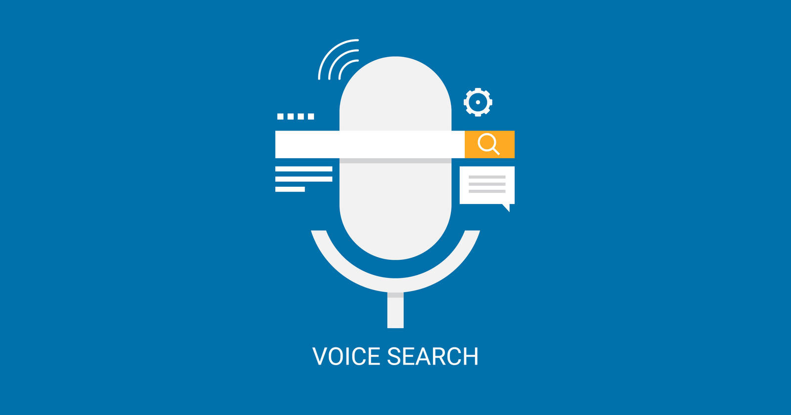

Author
June 17, 2024
Achieve Website Mastery with WordPress
In today’s digital age, getting a premium website is no longer a luxury but a very basic necessity for every business of all sizes. And, this is where the importance of CMS aka Content Management System steps in. There’s no dearth of options when it comes to CMS. Out of all such variants, claiming to . . .
fame, WordPress stands out as a highly versatile option. Before you delve deep into the blog below, first take some time out to learn about what a CMS is all about.
Glean Out Some Insights into CMS
A CMS refers to an application, which can be used to publish as well as manage web content. It’s 2003 when WordPress began its journey as a blogging site. Since its inception, it has successfully stood out as the most in-demand Content Management System for most of the web developers.
As per the recent survey, around 43.5% of the world’s top websites are powered by WordPress as their CMS. About 478 million sites are built on WordPress. Also, WordPress is known to have ruled the CMS market with a whopping 62.7% share.
Additionally, if you start looking out for web developers, chances are that you will find a WordPress development company than for any other content management system.
Reasons Why WordPress is Gaining Such Momentum
Below are mentioned some reasons why you should stick with WordPress – because, all those “other” platforms can’t really compete, no matter what anyone else tries to convince you!
Have a look –
• Easy to Customize
Yes, you can definitely opt for template-based sites, but keep in mind that these websites have almost lost their significance! With WordPress, you can easily customize your website. Maybe, that’s why, every reputed web development company considers WordPress as their first choice.
When it comes to WordPress, you can take your pick from an extensive range of themes. Such ranges can befit almost any niche like a website’s blog, feature services, QA website, online store, etc.
Additionally, these can be customized with ease. Hassle-free customization can bring forth additional perks, lower development cost being one of them. As composed to any other CMS platform, the professional WordPress developers are abundant. Hence, the cost of creating a website is comparatively low as well.
• User-Friendly Interface
Another perk of using WordPress is its user-friendly interface. You need not have ample knowledge or expertise in tech or website management. This CMS platform provides an intuitive dashboard, which enables users to navigate and carry out different tasks like uploading images, adding new content, managing plugins, etc.
Such simplicity makes WordPress highly accessible to everyone, right from beginners to seasoned developers. Also, with WordPress, you can lay more emphasis on content creation and less on managing complex technical aspects.
Thanks to the straightforwardness of this platform’s interface, you can easily save your effort or time, enabling you to make updates with utmost efficiency.
• Reliability is the Key
Nobody wants to run a risk when it comes to creating or managing a website. And, it’s always better to choose a trustworthy platform, and WordPress fits the bill perfectly. Some of the world’s highly reputed organizations that use WordPress for their websites are TED, CNN, BBC America, TechCrunch, etc.
Always remember that a reliable web platform is constantly evolving. WordPress is regularly being upgraded with latest features as well as functionalities. It’s capable of fulfilling your dream of building a high-end and modern website.
If need be, consider engaging professional WordPress development services to create a smart website from scratch.
• SEO-Friendliness – Another Perk
Currently, ensuring SEO-friendliness is an important consideration from the time of web development. Each website owner aims to stand out from the rest, boost their SERP rank, and generate organic traffic.
WordPress is the ideal option for developing SEO-friendly websites because it is primarily a CMS (Content Management System). WordPress includes a number of built-in tools that can assist you in monitoring your website’s SEO friendliness. Upgrading from WordPress SEO plugin installation to basic SEO tools is another option.
One trustworthy WordPress SEO plugin is Yoast SEO. There is a paid version and a free version. Before acquiring the premium version, you can familiarize yourself with the free version.
You will have access to pertinent keywords, phrases, and related terms with the premium version. The most crucial pages on your website can be automatically monitored by you. You will also receive information about ad-free experiences, internal link recommendations, content optimization, and more.
Other than Yoast SEO, there are multiple other WordPress SEO plugins available out there in the market. Such plugins include SEO Framework, Rank Math, etc. To boost your search engine efforts with off-page or on-page practices, you should trust experts offering SEO services.
• Extensive Options for Customization
With the extensive theme and plugin library that WordPress provides, you may personalize your website to reflect the style of your business. WordPress offers solutions for both simple blogs and intricate e-commerce sites.
You may alter the look and feel of your website with themes, and add specialized features like social media integration, SEO tools, and contact forms with plugins.
Benefit: Having the option to personalize your website guarantees that it will work to support your business objectives in addition to having a polished appearance. You may distinguish yourself from the competition by developing a distinctive online presence.
Brings Ease in Content Creation
The core of web development is content. Since WordPress makes it simple for non-techies to produce and post material, it has made things easier.
After your website goes live, you must select the posts option from the dashboard menu. You may add media files, find formatting choices, and use a text editor here. You are now able to write and post new blog entries.
Here, editing is likewise a simple process. Just make the necessary edits, hit the save button, and the most recent version of the content will be accessible.
• Scalability and Security are Ensured
Any website owner’s number one priority is security, and WordPress takes security very seriously. To fix flaws and defend against online attacks, the platform is updated frequently.
Furthermore, a plethora of security plugins, like Wordfence and Sucuri, are readily accessible and provide functions like malware scanning, firewalls, and defense against brute force attacks.
Benefit? You may rest easy knowing that your website is safe if you use WordPress. Frequent updates and security plugins assist in defending your website against hackers, guaranteeing the security of your data and that of your visitors.
Your website’s requirements will expand along with your business. Because WordPress is so scalable, you can start with a modest website and grow it bit by bit as your company grows.
WordPress is capable of handling any task, including building new pages, launching an online store, and incorporating sophisticated features. WordPress’s scalability guarantees that your website can expand with your company.
Over time, you’ll save time and money by not having to move platforms as your needs evolve.
• Seamless Content Management
WordPress brings a lot of ease in website maintenance. Website management involves different aspects that include running backups, security checks, managing spam, updating themes & plugins, boosting speed, testing for broken links, and more.
Taking just a bit of time out and engaging a small learning curve, you can do all of this. However, in case you don’t want to shift your focus from your business, you can hire WordPress developers
to run constant or demand-centric maintenance.
This will save your costs, and your site will always perform to its optimum efficiency.
WordPress – Power Your Visions, One Click at a Time!
In conclusion, content management systems (CMS) like WordPress are a great option for creating and maintaining your website because they provide a host of advantages.
WordPress has everything you need to establish a successful online presence, from its SEO friendliness and security features to its user-friendly design and abundant customization choices.
WordPress is an incredibly useful tool that may assist you in reaching your objectives, regardless of whether you’re just getting started or looking to upgrade your current website.
By taking advantage of WordPress’s features, you can make a website that looks amazing and functions incredibly well.
WordPress provides the capability and flexibility you need to thrive in the digital world, regardless of your goals – growing your company, attracting more customers, or increasing traffic.
Author
June 17, 2024
Perks of a Fast-Loading Website for a Fast-Paced Digital Age
Speed is the ultimately currency in this fast-paced day and age! The look of your website is primarily important to make that “first-impression” of your brand impactful. What’s more important – how fast it loads! A fast-loading website has galore benefits to spell – from boosting your user-experience to reducing your bounce rate, from maximizing. . .
your engagement to increasing the viewer retention rate and boosting search engine ranking.
If you are not happy with the engagement rate of your site or if more and more audiences are bouncing off, you might have to check website speed. Wondering why? Below are mentioned some reasons why a fast website is important, and how it can influence your bottom line.
Have a look –
• First Impression is Crucial
The clock starts ticking the moment a potential customer comes on your website. According to studies, 40% of users leave a website that takes more than three seconds to load, while 47% of users want a webpage to load in two seconds or less.
Before you Google “ how I can test my website speed,” you should know that patience is a rare quality in today’s fast-paced world. If your website loads slowly, visitors are likely to leave before they’ve had a chance to look at what you have to offer.
A website that loads quickly makes a good initial impression, which is important for maintaining visitors’ interest. Users will stay longer, visit more pages, and engage with your content if they can easily find the products or information they’re looking for. Higher conversion rates result from this greater involvement, regardless of what your objective is.
• Brings a Boost in Conversion
Did you know that your website loading speed can directly impact the overall conversion rate of your site?
Conversion rates may drop noticeably for every extra second it takes for your page to arrive. Google’s study indicates that conversion rates on mobile pages can drop by as much as 20% with a one-second load time delay.
Consider this: a user may give up on their basket in frustration if the checkout page loads slowly when they are trying to make a purchase. In a similar vein, prospects may give up and visit a rival if your contact form takes too long to send.
A website that loads quickly makes it possible for customers to accomplish desired tasks swiftly and without difficulty, which increases sales and leads for your company.
• Brings a Lot of SEO Benefits
Page speed plays a big role in how search engines rank your website, and search engine optimisation (SEO) is essential for bringing in organic visitors. Google has made it clear that one of the criteria it uses to determine page ranking is site speed.
This implies that slower websites may suffer from worse search engine ranks, which will make it more difficult for prospective clients to locate you.
Conversely, a quick website has a better chance of appearing higher in search results. Your site may receive more organic visitors as a result of this enhanced visibility, which will lessen the need for expensive marketing initiatives like paid advertising.
In addition to increasing user experience, faster website loading times increase your chances of ranking well in search engine results pages (SERPs).
• Mobile Responsiveness is Increased
There are a number of website performance tools available in the market, that you must use to check how much time your site’s taking to load.
These days, it’s not optional to make sure your website is mobile-friendly—with over half of all web traffic coming from mobile devices. However, speed is just as important to a mobile-friendly website as having a responsive design.
Because they are constantly on the go, mobile consumers anticipate that websites will load quickly—even on inferior networks. Due to Google’s Mobile-First Indexing strategy, your website’s mobile version is given priority when it comes to ranking.
Your overall search rankings will suffer if your mobile site loads slowly. Even when users are surfing from their phones, a mobile site that loads quickly keeps them interested and boosts the chance that they will convert.
• Your Bounce Rate Gets Decreased
The percentage of visitors to your website that leave after only reading one page is known as the “bounce rate.” Search engines may interpret a high bounce rate as an indication that your website doesn’t have any worthwhile content, which could lower your SEO ranks even further.
One of the main causes of high bounce rates is slow load times; if a website takes too long to load, consumers will become disinterested quickly. You can lower bounce rates and encourage users to view more pages on your website by making it faster.
This boosts the possibility that visitors will become consumers in addition to aiding with SEO. The more time a user spends on your website, the more chances you have to earn their trust and motivate them to act.
• Boosts Client Trust & Credibility
Looking to conduct a website speed test? Before going ahead, you should know that a sluggish website can take a serious toll on your brand repute.
However, a website that loads quickly conveys professionalism and attention to detail, both of which can improve the perception of your company.
Customers are more likely to believe a website that runs smoothly and loads rapidly. This trust can result in repeat business, devoted patrons, and favourable word-of-mouth recommendations—all of which are critical for the long-term viability of an enterprise.
• Stay Abreast of the Curve
You must frequently thoroughly analyze website performance, because in today’s fast-paced age, each second matters!
You have a clear edge over your rivals if your website loads more quickly. In addition to drawing more visitors, a quick website keeps them on it longer, which raises conversion rates.
On the other hand, you run the risk of losing potential clients who will swiftly look elsewhere if your website loads more slowly than those of your rivals. You may gain the advantage you need to stay ahead of the competition by making an investment in website performance optimisation.
Offering an exceptional user experience will help you stand out from the competition and draw in more business.
Speed is the Ultimately Currency!
So, what are you still waiting for? Go ahead, and count on a reliable agency offering premium custom website services to get your website done or re-done to re-boost its loading speed.
Website performance is now a company requirement rather than a nice-to-have feature in the digital world, where users have limitless options and competition is intense.
A website that loads quickly improves user experience, increases conversions, strengthens SEO, and fosters audience confidence. By making an investment in speed optimisation, you’re enhancing the functionality of your website and positioning your company for long-term success.
Recall that speed is crucial in the world of the internet. Make sure your website loads quickly to avoid losing out on potential clients and sales. Make sure your website loads quickly and effectively by doing the required actions, and you’ll see an increase in business.
Author
June 17, 2024
10 Modern Website Design Principles That Drive Business Growth
“There’s only one boss. The customer. And he can fire anybody in the company from the chairman on down, simply by spending his money somewhere else” – Sam Walton
In this day and age, it’s almost impossible to ensure success for a business without implementing practical and effective business strategies. One of the most effective. . .
business strategies. One of the most effective marketing strategies includes creating a modern business website design and promoting your brand through it.
With a thoughtfully crafted website, your business can drive engagement organically, build trust, spark interests about your brand, and lead your prospects to make an action.
However, the wheel of time is constantly moving, so are the basic website design trends, technologies and principles.
This blog will give you an idea of the top 10 basic principles of modern website design. It will also shed light on how a modern website is different from the traditional sites.
Read along –
Factors That Distinguish a Modern Website from the Crowd
A new-age website usually differs from the traditional designs in its emphasis on mobile responsiveness, user experience, minimalism, and the likes.
While the conventional web designs often emphasize aesthetics as well as information-heavy layouts, every modern corporate website design prioritizes functionality, accessibility, agility, and intuitive navigation.
Additionally, modern web designs embrace uncluttered and clean interfaces with an emphasis on functionality, incorporating robust features such as SEO, interactive elements, and edgy technologies to boost user engagement.
Such evolution reflects a stark shift from desktop-focused and static websites to dynamic and multi-device platforms, which cater to the changing demands of today’s digital-savvy audiences.
Top 10 Principles of Designing a Modern Website
You must already have the impression that a robust website is overall beneficial for your business growth.
Here is us listing the most basic yet effective principles of crafting a website that ticks off the modernity box. Have a look –
1. Simplicity is the Key
Less is always more, and simplicity is the ultimate sophistication. These hold true for modern website development, too. To make your website simple yet highly engaging, you should –
• Keep your site decluttered. A simple, clutter-free design is straightforward, and capable of enhancing aesthetical appeal. Opt for a grid-centric layout, as it can help you organize and align the crucial aspects for a clean web design.
• Say ‘no’ to excessive graphics, too many texts, etc. The imagery incorporated must reflect your brand’s personality and core values.
• When it comes to typography, make sure that the fonts you use are web-friendly and easy-to-read. Consider limiting the number of typefaces to three.
• Pick a colour palette, which makes your brand memorable. Too many loud hues can overwhelm the users, straining their eyes.
• Don’t forget to convert ‘negative’ into a ‘positive.’ The white space that refers to the empty space between the visual elements aka negative space. Let it drive more attention to the most important pieces of content on your site.
2. Count on A Responsive Design
Due to an increasing use of mobile devices, the popularity and importance of responsive designs are picking up fast!
A well-built, fully responsive site automatically adjusts its elements and layouts to fit the screen size of the device being utilized.
This will ensure that your website looks, and functions impeccably on tablets, desktops, and smartphones.
By offering a consistent experience across different devices, responsive design can help you in reaching a broader section of visitors and enhancing user satisfaction.
3. Faster Loading Time is Crucial
Users anticipate speedy website loading times in today’s hectic society. High bounce rates and visitor annoyance might result from a website that loads slowly.
Use effective coding techniques, content delivery networks, and image optimization to guarantee quick load times (CDNs). You can find areas for improvement with the use of Google’s PageSpeed Insights tool.
Recall that even a one-second lag in page loading speed can cause conversion rates to decline significantly.
4. Lay Emphasis on Visual Hierarchy
The placement of items on a page to direct the user’s attention to the most important stuff first is known as visual hierarchy.
This idea entails carefully arranging spacing, color, size, and contrast to produce a fluid flow across the page.
For instance, calls to action must be prominently shown with contrasting colors, and headlines ought to be bolder and larger than body text.
A clear visual hierarchy aids people in comprehending your content and acting upon it swiftly.
5. Accessibility Should Get More Focus
Before you Google “the basics of web design modern,” you should know that a website accessible guarantees that users of all abilities, including those with disabilities, can utilize it.
This idea entails making your website keyboard-friendly, utilizing alt language for images, and designing with screen readers in mind. In many places, accessibility is not only required by law, but it is also morally required.
You may expand your audience and show that you are committed to diversity by making your website accessible.
6. Consistency – the More, the Better!
Another major factor that you should take into consideration to fit the criteria of building a modern company website design is consistency.
A consistent website is necessary to make it appear cohesive and professional. This principle applies to font styles, color schemes, picture sizes, and button styles.
Be consistent across all pages to provide a unified brand experience that builds audience trust. When you keep your website consistent, users will find it easier to navigate because they will know what to expect from different sections.
Content is Still the KING
A content-first strategy guarantees that your design supports and enhances your message. Content is the foundation of any website.
This idea is organizing your website so that it revolves around your content as opposed to attempting to force material into an already-designed style.
A content-first strategy also highlights how important it is to provide relevant, high-quality material that caters to your audience’s needs.
Always keep in mind that your design should enhance, not take away from, your content
SEO-Friendliness Should be a Priority
A well-designed website is not very useful if search engines cannot find it. From the beginning, SEO (Search Engine Optimization) ought to be incorporated into the design process.
This entails utilizing appropriate heading tags, inserting keywords organically, optimizing the structure of your website, and making sure that load times are quick.
An SEO-friendly design increases the amount of natural traffic to your website by making it more visible on search engine results pages (SERPs).
Effective Usage of Imagery is Crucial
In contemporary web design, images are essential, but they must be handled carefully. Relevant, high-quality photos can strengthen your argument, arouse feelings in viewers, and increase interaction.
But an overabundance of or irrelevant images can cause your website to load slowly and detract from your content.
To bolster your content and direct the user’s attention, use graphics carefully. Additionally, to set your brand apart from rivals, think about utilizing original illustrations or photos.
Get, Set, Implement These Strategies
Your online presence can be greatly improved by incorporating the concepts of current web design into your website approach.
You may build a website that not only draws visitors but also turns them into devoted clients by emphasizing user-centric design, simplicity, responsiveness, and other fundamental concepts.
Recall that your website frequently serves as a potential customer’s initial impression of your company, so create an impact.
Author
June 17, 2024
Why is a Mobile-First Design Non-Negotiable for Your Website?
Mobile-first design is no longer the future; it’s NOW! The digital dominance is almost tantamount to mobile dominance. The fact that the world’s 60-70% businesses have already embraced mobile-first designs, bears a testimony to the statement. No doubt, mobile devices have become the prime gateway to the Internet for millions of users across the globe.. . .
Since this trend continues to thrive, the concept of mobile first web design has come into play as an important approach for web development.
You must be living under the rock if you haven’t yet embraced mobile-first design! You are clearly missing out on ample leads and prospects out there, that can significantly contribute to your brand’s sustainable growth.
Wondering why a mobile first website design is so important? Hold your horses! We are going to discuss this in the following blog. But, before that, let’s shed light on what mobile-first web design is all about, the reasons why it’s important, and how it can benefit your site.
What is Mobile First Site Design?
Mobile-first design refers to an approach to website development, which lays an emphasis on mobile user experience.
Instead of designing for any desktop screen first and then embracing the design for comparatively smaller screens, mobile-first design begins with the compact screen size and scales up.
This ensures that a website functions smoothly across mobile devices, where most of the users may engage with your content.
The premise that mobile users have distinct requirements and behaviours than desktop users is the foundation of the mobile-first design philosophy. Touch interfaces, smaller screens, and frequent usage in mobile situations characterize mobile devices.
Designers may produce more effective, user-friendly websites that offer a better experience on all platforms by putting these restrictions first.
Why is Mobile-First Design Important?
Below are mentioned some reasons why more and more business-owners are paying more equity on
mobile first ecommerce design. Have a look –
• Increasing Usage of Mobile
Over half of all web traffic currently originates from mobile devices, and this percentage is only predicted to increase.
As of 2023, mobile devices account for 58.33% of all web traffic, according to Statista. Businesses must emphasize mobile consumers when building their websites due to this shift in user behaviour.
Inadequate mobile website performance can lead to increased bounce rates and missed opportunities. Consumers who visit a website that is hard to use or takes a long time to load on their smartphones are unlikely to return.
A website that prioritizes mobile design makes sure that it is optimized for most of your visitors, giving them a smooth and engaging experience.
• Improved User Experience (UX)
A website’s success is largely dependent on its user experience. Designing for mobile devices prioritizes clarity, simplicity, and functionality to improve user experience.
Because mobile screens are smaller, designers must decide what is most important to include and remove. As a result, the design is easier to use and cleaner, more simplified.
Additionally, touch-friendly interfaces—which make buttons, links, and interactive components simple to operate on a small screen – are emphasized in mobile-first design.
Your website can be made more user-friendly and accessible by prioritizing the demands of mobile users, which will increase user happiness and engagement.
• Better SEO Performance
Google and other search engines have acknowledged the value of mobile first websites. Google’s search algorithm currently employs mobile-first indexing, which implies that it primarily indexes and ranks material from mobile versions of websites.
This modification demonstrates that mobile-first design is now required for businesses to score highly in search engine results, not merely a preference.
Websites that prioritize mobile traffic are probably going to load more quickly, have fewer bounce rates, and offer a better user experience overall – all of which will boost search engine optimization.
Putting mobile first will improve your website’s exposure and drive more organic traffic.
• Enhances Accessibility is Ensured
You can make sure that users can access your website from any place or device by prioritizing mobile-first design.
Furthermore, the mobile-first design philosophy pushes designers to think about accessibility features like voice navigation, touch target sizes, and text readability.
Your website becomes more inclusive by taking these factors into account and accommodating people with varying abilities and interests.
• Future-Proofing Your Website
The digital world is ever-changing, and new gadgets with different screen sizes and resolutions are released on a regular basis. You may lay the groundwork for a readily adaptable foundation by starting with mobile devices.
With its emphasis on scalability and adaptability, mobile-first design makes your website more capable of keeping up with technological advancements in the road.
Moreover, a website optimized for mobile devices has a higher probability of being compatible with new platforms like wearables and smart gadgets.
This proactive strategy makes sure that even as new technologies develop, your website will continue to be useful and relevant.
How Can You Implement Mobile First Design for Website?
• Prioritize Content
It’s critical to give the user-relevant content first priority when developing for mobile. Start by determining the essential information and features that your audience requires, then make sure that these are easily available on the mobile version of your website.
• Put Responsive Design to Use
One essential element of mobile-first development is responsive design. With this strategy, your website will adapt to various screen sizes and orientations automatically and offer a consistent user experience across all devices. To develop a responsive layout, use CSS media queries, flexible grids, and fluid images.
• Make the Most of Speed
Website loads quickly for mobile users. Reduce code, use effective hosting, and compress photos to improve the speed of your website. Your SEO rankings will rise along with the user experience when your website loads faster.
• Explore Different Devices
Test your website on a range of devices and browsers to make sure your mobile-first design is working as intended. This will assist you in discovering any problems and implementing the required changes to improve usability and performance.
Time for a Quick Wrap
So, what are you still waiting for? Go ahead and find a reputed mobile first design agency to create a mobile-first website for your business.
You can boost user happiness, optimize your website’s performance, and beat the competition by giving the mobile user experience top priority.
Whether you’re revamping an old website or launching a new one, success in the modern digital world depends on implementing a mobile-first strategy.
Author
June 17, 2024
Colours and The Way They Impact the Visitors of Your Website
Did you know, colour has a crucial role to play in making an impact on the visitors of your website? Each colour has a unique appeal to bring to the fore, a distinct way of tugging at the heartstrings of your digital audience. This is where the importance of colour psychology for web design comes. . .
into play.
Since every hue has its own way of earning attention, you should take ample time out to research on color psychology for website. Don’t forget to read the following blog where we have discussed at length about the significance of colour in website design.
Website Colour Psychology – Science Behind Everything
The foundation of colour psychology is the notion that different hues cause people to experience different emotions.
Both physiological and psychological reactions are possible, and they can have an impact on behaviour as well as mood.
Red, for instance, is frequently connected to passion, urgency, and excitement, whereas blue is connected to stability, calmness, and trust.Research has shown that such a psychological response makes it more than just a theoretical assertion.
Research has indicated that hues can affect an individual’s heart rate and temporal perception.
This means that, in terms of colour psychology in web design, the shades you pick can have a direct impact on the feelings and activities consumers experience when they visit your website.
Does Colour Have any Significance in Branding?
Yes, it does!
Prior to exploring how colours influence user behaviour, it is important to comprehend their overall function in branding. The use of colour is essential to a brand’s identity. They quickly communicate the personality, values, and message of the brand.
For example, Coca-Cola employs red to communicate energy and excitement, whereas Facebook utilizes blue to communicate dependability and trust.
The colours you use for web design should complement the branding and messaging of your business.
Building brand identification and trust is facilitated by maintaining colour consistency in all branding elements, including the website.
Users will begin to associate your brand with the colours you employ frequently, which can increase brand loyalty –
A Riot of Colours, A Gamut of Emotions
As mentioned already, gaining a thorough understanding of colour psychology is important for designing a website, which appeals to the intended user base.
It can be applied to direct user attention, arouse feelings, and form associations.
Now, let’s find out which colour evokes what emotion –
1. Red
Emotion: It evokes a sense of urgency, enthusiasm and passion.
Usage: To convey a sense of urgency, it’s frequently utilized in clearance sales and calls to action.
2. Blue
Emotion: Blue is associated with professionalism, serenity, and trust.
Usage: It is frequently used to communicate dependability in the branding of IT or financial enterprises.
3. Green
Emotion: Green symbolizes riches, health, and the natural world.
Usage: Symbolizing prosperity and safety, it is widely used in financial and environmental websites.
4. Yellow
Emotion: The colour yellow exudes happiness, Vigor, and positivity.
Use: This colour attracts attention and is frequently used to draw attention to warnings or to bring attention to crucial information.
5. Orange
Orange is a colour that blends yellow’s pleasure and red’s vitality. It’s a cheerful, energetic colour that can make you feel energized and enthusiastic.
Orange is a popular colour choice for call-to-action buttons because it is visually striking without being as overpowering as red.
6. Purple:
The colour purple is connected to elegance, inventiveness, and refinement. It’s frequently utilized to convey a feeling of exclusivity and refinement on websites for high-end cosmetics and products.
Purple is a wonderful colour choice for websites that want to look both creative and professional because it can also inspire a sense of peace.
7. Black:
Black is a hue associated with power, elegance, and refinement. To convey exclusivity, luxury brands frequently use it.
Additionally, black can be utilized to create contrast, enhancing the visibility of other colours on the website.
8. White:
Space, simplicity, and cleanliness are all linked to white. It’s frequently utilized in minimalist designs to evoke clarity and openness.
In web design, white space, also known as negative space, is essential because it lowers cognitive load and improves readability.
Learn the Strategic Use of Colours in Website Design
By this time, you must have already gleaned out adequate insights into
colour psychology website design
and its significance.
Now is the time to discover how you can strategically use different hues to influence your users’ behaviour –
• CTA Buttons
Your CTA aka Call-to-Action buttons’ colour can have a big impact on conversion rates. Red or orange buttons, for instance, tend to stick out and evoke a sense of urgency, which encourages users to click.
To make the CTA button stand out, the color scheme should also be different from the rest of the page.
• Navigation
You may also utilize colour to direct visitors across your website. One way to make it easier for users to navigate your site is to use a distinct colour for the navigation bar and links.
• Emotional Triggers
You can utilize colour to evoke feelings, depending on the good or service you’re selling. For instance, an e-commerce site with flash sales would use red to convey urgency, but a wellness website might use green and blue to provide a calming impression.
• User Segmentation
Colour can be used to visually divide user categories that are targeted by your website. A website that sells goods for both sexes, for instance, might use pink hues for the women’s part and blue tones for the men’s.
• Cultural Considerations
It’s also critical to take cultural variations in colour perception into account. For example, although in Western cultures white is linked with purity, in many Eastern traditions it can relate to sadness.
Selecting colours that appeal to your target audience might be made easier if you are aware of their cultural background.
Colour Psychology in Website Design– Time for a Closure
In web design, colour psychology is an effective tool that has a big impact on user behaviour.
Understanding how different hues elicit feelings and behaviours will help you strategically design your website to provide a more productive and enjoyable user experience.
The colours you use can help you accomplish a variety of objectives, like fostering a sense of urgency, luxury, or trust.
To make sure your colour selections complement your brand and successfully sway user behaviour, you should conduct user research and test various colour combinations, just like you would with any other design element.
Author
June 17, 2024
The New Frontier: Impacts of AR/VR on Website Development
In the world of development – just like any other field – technologies like Augmented Reality and Virtual Reality are not just revered, it’s worshipped. Over the years, AR and VR have transformed from being technologies utilized primarily in entertainment and gaming to being essential tools across various industries that include web development.. . .
As the Internet thrives, the implementation of AR and VR in web developmentwill also witness a huge hike in the upcoming years.
Besides boosting user experience, AR and VR have an important role to play in enhancing engagement and creating immersive digital environments.
In this blog, we are going to shed light on the importance of AR/VR in website development, and what it exactly means for the future of digital interaction.
Have a look –
Emergence of AR and VR in Web Development
Users’ interactions with digital information have changed dramatically as a result of AR and VR technologies. Whereas AR projects digital data onto the physical world, VR generates fully immersive worlds for users to explore.
With the introduction of these technologies into web browsers, consumers may now view AR/VR content without the need for extra hardware or software. These technologies are no longer limited to specialist apps.
One major breakthrough that has changed the game is the creation of WebXR, a web standard that enables AR/VR experiences in browsers. With WebXR unity AR, developers can design immersive experiences that work across several platforms, such as desktop computers, tablets, and smartphones.
Consequently, websites may now provide visitors with more dynamic and captivating experiences, such as immersive storytelling and virtual product demos.
• AR/VR in User Engagement Enhancement
The user experience is being revolutionized by the incorporation of AR and VR into web development.
Information is mostly conveyed through text, photographs, and videos on traditional websites; however, AR/VR adds a new level of interaction by enabling viewers to engage more actively with the content.
Higher levels of engagement and a more memorable user experience are brought about by this interactivity.
To illustrate, augmented reality (AR) in e-commerce enables buyers to digitally try on apparel, accessories, and even furniture to see how it would appear in their homes before making a purchase.
This lowers the possibility of returns while simultaneously improving the purchasing experience.
Conversely, virtual reality (VR) can be utilized to generate virtual showrooms or tours, which let clients examine items or areas in-depth without having to leave their homes.
By offering immersive, interactive courses, AR/VR has the potential to revolutionize traditional learning approaches in education.
In a virtual setting, students can practice real-world skills, delve into intricate scientific concepts, or even tour historical landmarks. This degree of interaction increases the effectiveness and engagement of learning.
The Impacts on Website Design and Development
The way websites are planned and developed is evolving as AR/VR becomes more commonplace in web development. Developers must consider new design principles that take user immersion, 3D spaces, and interaction into account.
This change necessitates a new method for designing user interfaces (UI) and user experiences (UX), with an emphasis on smooth transitions between the physical and virtual worlds.
Web developers also need to think about performance optimization because content for AR and VR might consume a lot of resources. A website’s ability to load swiftly and function properly across many devices is essential to preserving a satisfying user experience.
Consequently, there is a rising need for developers with in-depth knowledge of WebXR and expertise in AR/VR technologies.
Furthermore, the use of AR and VR in web development creates new avenues for inventiveness and originality.
By experimenting with novel approaches to information presentation and narrative construction, designers and developers can push the limits of what is feasible on the web.
This might cause completely new trends in web design to develop, putting an emphasis on immersive experiences above conventional layouts.
Challenges and Considerations – Let’s Not Forget!
IntegratingAR and VR in web development presents a number of obstacles in addition to the amazing possibilities. Among the main issues is accessibility.
Although AR and VR technologies have the potential to improve user experience, it is crucial to guarantee that they are accessible to all users, including individuals with impairments.
To serve a broad audience, developers need to think about how to make inclusive experiences. The requirement for standardized frameworks and tools presents another difficulty.
Although WebXR has facilitated the creation of AR/VR content on the web, developed tools and frameworks that help streamline the process are still lacking.
Security and privacy are further crucial factors. Access to sensitive data, such as location data or camera feeds, is frequently necessary for engaging in AR/VR experiences.
To safeguard user information and make sure privacy issues are taken care of, developers must have robust security measures in place.
So, What Does the Future Hold?
Although the use of AR and VR in web development is still in its infancy, there is a lot of room for expansion.
We may anticipate increasingly complex and popular AR/VR experiences as technology develops. Like responsive design is now, it is expected that AR/VR will eventually be a standard feature of websites.
Early adoption of AR and VR by businesses will give them a competitive edge by enabling them to differentiate themselves from rivals with distinctive and captivating experiences.
This offers developers an amazing chance to experiment with cutting-edge web design and development techniques and pick up new skills.
Time for a Wrap
In summary, AR/VR is going to be a big part of web development in the future since it gives us new methods to interact with consumers and make immersive digital experiences.
Technology will change how we engage with the web as it develops further, making online encounters more engaging, customized, and memorable.
The moment has come for developers and businesses to investigate AR/VR potential and get ready for a future in which the lines separating the virtual and real worlds will become increasingly hazy.
Author
June 17, 2024
AI – A Silver Lining on the Sky of Website Development
“AI is the new electricity.” – Andrew Ng, Co-founder of Google Brain. The effects of Artificial Intelligence services are not recent. As the transformative power of AI becomes increasingly evident, forward-thinking companies are recognizing that AI is not just a buzzword but a strategic tool that holds the key to unleashing growth, efficiency and innovation."...
Over the recent few years, the path of AI-forwardness has stretched far beyond technological prowess and made inroads into the realms of website development.
From the voice-enabled user-interfaces to personalized product recommendations, to automated customer service agents, and intelligent content curation – artificial intelligence is already transforming and powering up the field of web development. In this blog, we are shedding light on how AI is going to help the developers turn their website visions into tangible outcomes. Take a look –
Discover the Next Big Ideas for Websites through AI
• AI-Powered Tools will Revolutionize Creativity
These tools create visually appealing and useful designs by analyzing best practices, user preferences, and current design trends.
Custom website design services
are one of those areas where AI in web development is having the biggest effects. With little assistance from humans, AI-powered design tools can now create whole themes, color schemes, and website layouts.
These tools create visually appealing and useful designs by analyzing best practices, user preferences, and current design trends.
For example, Wix’s ADI (Artificial Design Intelligence) technology enables anyone to create websites that seem professional even if they have no prior design experience.
Users can create a fully working website with unique content by providing answers to a few questions about their business and preferences.
By ensuring that anyone with minimal resources can produce aesthetically pleasing websites, this democratization of design levels the playing field in the online marketplace.
• User Experience Enhancement through Customization
Because AI can evaluate large volumes of data and learn from user behaviour, highly tailored user experiences are now possible.
These days, websites can customize style, suggestions, and content to suit the tastes of certain users.
Previously unachievable, this degree of personalisation has emerged as a crucial element in maintaining customer satisfaction and engagement.
E-commerce websites, for instance, employ AI algorithms to examine customer browsing and purchase histories to suggest goods that are relevant to their interests.
This boosts conversion rates in addition to improving the shopping experience. AI-powered chatbots also offer immediate, customized customer care, which enhances user happiness and experience even more.
• Automation in Coding as well as Development
Additionally, AI is progressing in automating the development and coding process. Machine learning techniques are used by programs such as DeepCode and GitHub Copilot to write complete lines of code, identify problems, and recommend code fragments.
This automation lowers the possibility of human error while simultaneously accelerating the development process.
AI is also capable of analyzing current codebases to find inefficiencies and recommend optimizations.
Large-scale projects, where manual code review would be laborious and prone to error, would benefit most from this.
Developers can concentrate on more strategic and creative parts of web development by automating these chores, which will ultimately result in more creative solutions.
• SEO and AI – A Match Made in Digital Heaven
Any website that wants to succeed needs to have search engine optimization (SEO), and AI is a key component of SEO optimization.
Artificial intelligence (AI)-driven tools such as SEMrush and Moz examine backlink profiles, keyword usage, and website content to make recommendations for enhancements that can raise a site’s position on search engine results pages (SERPs).
Moreover, web developers can optimize content for future searches since AI systems can forecast user behavior and search patterns.
Because the digital landscape is constantly evolving, websites that take a proactive approach to SEO are guaranteed to remain competitive.
New tools for creating content that is AI-driven are also on the rise, assisting developers in producing SEO-friendly content with less work.
• Security Enhancement with AI Being the Guardian
Another reason why the popularity ofartificial intelligence development company
is going to reach the popularity pivot in 2024 is to fulfil the growing demand for security.
Concern over website security is growing as sophisticated cyberattacks become more common. By immediately identifying and thwarting such threats, artificial intelligence (AI) is at the forefront of improving website security.
To keep data breaches at bay, machine learning algorithms are able to recognize anomalous patterns of activity that might point to a cyberattack and take prompt action. AI is revolutionizing not just security but also website upkeep.
Predictive analytics can predict when specific website elements might malfunction, enabling developers to fix problems before they become serious.
By taking preventative measures, downtime is decreased, and website functionality is maintained, giving users a seamless experience.
• Chatbots Will Continue to Hold the Popularity Ground
It’s a matter of expectation that the need for hiring more and more AI chatbot development companies will increase in the upcoming years.
By increasing user engagement and optimizing processes, chatbots have the potential to completely change the web development industry in the future.
TechMobius claims that AI-powered chatbots have several advantages, including the ability to handle several inquiries at once, reduce response times, and offer 24/7 customer care.
By using data to comprehend customer preferences, they personalize interactions and provide more customized experiences.
Furthermore, chatbots can help users navigate complicated services, lead them around websites, and increase conversion rates by providing prompt assistance during the purchasing process. Chatbots will also bring advancement in the overall sophistication as AI technology develops, enabling companies to build responsive, dynamic, and effective websites. This change will significantly boost overall website performance, which will increase user happiness and spur business growth.
AI and the Future of Website Development
AI has a bright future to promise to every modern website development company
out there. We should expect even higher degrees of automation, personalization, and efficiency in web creation as AI algorithms advance in sophistication.
The generation of content using AI is one area with room for expansion. Future advancements might make it possible for AI to produce more intricate, nuanced content that connects with viewers on a deeper level, even while existing tools can only produce basic information.
Furthermore, AI might have a bigger impact on web accessibility, making sure that websites are accessible to users with disabilities.
The possibility for AI to improve developer collaboration is another fascinating development.
Artificial Intelligence-powered systems have the potential to enable smooth real-time collaboration between developers worldwide on coding projects, hence removing geographical restrictions.
To sum up, AI is revolutionizing web development in ways that were previously unthinkable.
Artificial intelligence is expanding the realm of what is feasible in the digital world by automating tasks like design and coding and improving user experiences and security.
The advantages of Artificial Intelligence in web development clearly exceed the disadvantages, notwithstanding ongoing difficulties.
We may anticipate that artificial intelligence (AI) will become more and more important in determining the direction of web development as technology advances.
Author
June 17, 2024
Future-Proof Your Website with These Development Trends
If “Content is the KING,” a website is the “CASTLE!” Your website is an integral aspect of your business. It must reflect your business aesthetic and prod your intended audiences to count on your brand. Keep in mind, you have just a few seconds to engage your users’ attention and gain a competitive edge.. . .
If you don’t want your prospects to bounce, land on your competitors’ websites, and contribute to their sales, you should start working on the enhancement of your website.
Website Development Trends to Gain Traction in 2024
Gone are the days when website development was all about CSS, HTML and JavaScript! Each year, an array of trends and technologies are coming to the fore to shape the web development game.
Just like every other year, this year (read 2024) is also going to witness the emergence of some advanced web designingand development trends, that are expected to hold the popularity ground.
Web Development Trends to Reach Popularity Pivot in 2024
In this blog post, we are shedding light on some of the trends that are expected to define the field of web development this year and the years to come.
Whether you are an expert striving for excellence or a business-owner looking for innovation, this is your roadmap to success.
So, before you go ahead and Google "how to create a performing website?"we would recommend you the following excerpt so you can glean some useful insights into some web development trends, that are most likely to hold the popularity ground in 2024 –
• AI and ML will Rule the Roost
Artificial Intelligence (AI) and Machine Learning (ML) will continue to be the game-changer in the field of web development in 2024 and even beyond.
In the year 2024, we expect to witness more websites inculcating AI-driven features such as chatbots, predictive analytics, personalized content, etc.
These cutting-edge technologies can enable websites to provide users with personalized experience, thus increasing engagement as well as conversion rates.
• PWAs Expected to Be on the Rise
Progressive Web Apps aka PWAs have been gaining momentum in the past few years. And, in 2024, this trend is expected to reach an even higher peak of popularity.
Besides being highly fast and reliable, these are also capable of working offline. Result? Users with poor Internet connection can easily make use of them.
With the number of mobile users reaching another height, Progressive Web Apps are expected to play a crucial role in web development.
• Voice Search will Gain Momentum
Before you go ahead, and hire a reputed website development company,you should keep in mind that voice search devices including Google Assistant, Amazon Alexa, Siri, etc., are going to witness an exponential hike in terms of their popularity.
Voice search needs a distinct approach compared to conventional text-based search. The professional web developers will require focusing on NLP (natural language processing) and conversational artificial intelligence to make sure that websites can interpret and respond to voice queries.
• Cybersecurity Measures to Gain Traction
Since cyber threats are constantly on the rise, it’s a matter of anticipation that cybersecurity will gain traction this year, and even beyond.
Backed by the increasing reliance on digital platforms for business operations, safeguarding websites against potential attacks is more complex than ever!
Web developers are expected to rely on advanced security measures like encryption, multi-factor authentication (MFA), and constant security audits.
Additionally, such adoption of 100% secure development practices including, DevSecOps, etc. will make sure that security is integrated into each phase of the process of development.
• Wasm to Reach the Peak of Popularity
Wasm also known as WebAssembly refers to an edgy technology, which enables web developers to run robust and high-performance apps on web browsers without having to face speed or efficiency related lapses.
In the year 2024, Wasm is poised to emerge as a mainstream technology for website development, allowing the creation of complex apps, which were previously possible only with native desktop software.
Using WebAssembly, web developers can write code in different languages like Rust, C ++, etc., and directly run it in the browser, leading to faster loading time and enhanced performance.
This trend is expected to gain pre-eminence especially for industries that need heavy computational tasks including video editing, gaming, and data visualization.
• Serverless Architecture to Preserve prominence
Serverless architecture will continue to be prominent in the years to come mainly because it enables developers to create and run apps without having to deal with the underlying infrastructure.
In the year 2024, this trend will witness momentous popularity, following the increasing needs for cost-efficient and scalable solutions. Backed by serverless architecture, web developers can lay more emphasis on writing codes while the providers of Cloud (Google Cloud, Azure, AWS, etc.) manage the infrastructure.
This approach decreases the complication of maintenance and deployment, resulting in faster development cycles as well as lower operational costs.
Serverless computing is a perfect solution for applications with different workloads because it scales automatically to fulfil demands.
• Dark Mode Standardization will Retain Importance
Dark mode has already been a popular trend in website design services for several years. This year, this trend is expected to become a lot more standardized.
Most of the modern users prefer dark mode due to its aesthetic appeal as well as reduced eye strain, particularly in dimly lit environments.
Keeping a tab on this increasing popularity, web developers are providing dark modes as an option, enabling users to compare between dark and light themes depending on their preferences.
• 3D Elements will Continue Remaining Significant
The usage of 3D components and immersive experiences in online design is growing in popularity as web technologies develop.
Anticipate a rise in the number of websites that use interactive components, 3D visuals, and animations in 2024 to provide interesting user experiences.
These components can be especially useful in fields like e-commerce, where they let customers see items from various perspectives, or in the classroom, where they can be applied to make interactive lesson plans.
Making sure 3D features improve user experience without sacrificing performance or load times is crucial to their success.
Last But Not the Least
Looking to get a new website done for your brand? Or, maybe, you just want your already existing site to get a new overhaul.
Whatever be the need, make sure that you skim through the aforementioned excerpt to get to know more about the upcoming web development trends prior to asking for the cost of building a website to the experts of your choice.
By embracing the aforementioned trends, brands can ensure that their sites remain user-friendly, secure, and competitive in today’s ever-evolving digital world.
Whether you are a business owner, a web developer, or a digital enthusiast, gaining an understanding of the direction of the development industry will help you make better decisions faster, thereby staying abreast of the curve.
Author
June 17, 2024
The Importance of UI/UX in Ensuring Your Website’s Success
“Good design is about process, not product.” Jared Sinclair. We all have come across websites of different sorts. Most of them consist of generic designs. Some even remind us of certain sites we have encountered already in the past. And then, at times, we stumble upon a website, and stand weirdly amazed through it. Those feel like nothing we’ve seen before!
. . . Did you know, in such cases, it’s generally the UI/UX that has the most significant part to play?
Not only does an attractive website run smoothly, but also refrain from wasting any user’s time. Users never remember a website only because it opened pages quickly but mainly because they like its design.Now, a great UI/UX can be characterized in various ways. Different kinds of UI-UX generally have other impacts on multiple users. Some may like it fancy, with a lot of heavy design elements. Some may like it better with interactive sections within the website, while the rest may like it minimal, which is not cluttered and has a clean design.
How Does UI Differ from UX?
The difference between User Interface and User Experience is mainly that UI indicates the stylistic components of a product. User Interface is an abbreviation for User Interface. Whereas UX or User Experience indicates how a user feels while using that product. The UI is a soft blue button with a shadow, but the UX is how easily the button can be used.
Thus, it’s not really incorrect to claim that User Interface lays emphasis on the visuals interface components like colours, fonts, menu bars, and the likes. But UX pays focus on the end-user as well as their engagement with the product.
UI relates to the aesthetic and visually pleasing aspects of products, whereas UX refers to the product’s overall customer friendliness. When it comes to UX, it also helps to stay cognizant of satisfying the users with a product, which is easy and highly effective to use.
Why is UI-UX So Crucial for a Business?
The basic objective of every firm is to boost sales and overall corporate growth. The importance of UX-UI Design in accomplishing this aim is critical. The UX-UI Design boosts the user experience and customer happiness, which eventually helps grow the number of users.
The UI (user interface) and UX (user experience) Designs help gain the customers’ trust and persuade them to utilize your application or website by giving them what they are looking for. The number of visitors to your website/application is used to assess the success of your fantastic UI and UX.
Below are some of the most remarkable perks you will get through premium UI-UX –
• It improves ROI (Return of Investment).
• It helps you understand your target audience better..
• It can largely enhance your brand.
• It saves both time and money.
• It boosts client acquisition and retention.
• It reduces debugging time and expenses
And, more….!
How Can UX-UI Boost the Success of Your Business Website?
• Nail Your First Impression
What sets the first impression of your website? It’s how it looks and certainly how it feels! Studies have shown that it takes just 50 milliseconds for users to establish an opinion on your website, and in that split-second, they determine whether to stay or abandon.
A meticulously designed User Interface instantly grabs attention, spells professionalism, and invites users to explore further. But a cluttered interface can lead to higher bounce rates as audiences quickly lose their interests.
• Improve Your User Experience
While having a fantastic UI is important, user engagement is primarily determined by the UX. Even with a beautiful design, a user will find a website frustrating if it is hard to use, loads slowly, or doesn’t have the information they need.
From the time a person lands on your website until they convert, UX design considers their complete experience. This covers everything, from mobile responsiveness and accessible content to unambiguous navigation menus and fast load times.
Effective UX design considers the user’s demands ahead of time and offers solutions before the user even knows there is a problem. For instance, placing a search bar in a convenient spot makes it easier for people to find what they need quickly.
Effective UX design considers the user’s demands ahead of time and offers solutions before the user even knows there is a problem. For instance, placing a search bar in a convenient spot makes it easier for people to find what they need quickly.
Like this, a site map that is well-organized and breadcrumb navigation makes it simple for visitors to navigate between sections of your website without getting lost.
• Boost Your Conversion Rates
Turning visitors into clients is a business website’s goal. UI/UX design is a key component of this procedure. A smooth and delightful user experience motivates users to perform desired actions, such as completing a contact form, purchasing a product, or subscribing to a newsletter.
On the other hand, subpar UI/UX can irritate consumers to the point where they give up on their tasks midway through.
• Establish Your Brand Trust
A brand’s trustworthiness and attention to detail are reflected in a well-designed website. Positive user experiences increase the likelihood that visitors will trust your business and make additional visits in the future. Favorable encounters with a brand over time foster brand loyalty and encourage repeat business and favorable word-of-mouth recommendations.
UI-UX is More Than Just Website Design – It’s Strategy!
A brand’s trustworthiness and attention to detail are reflected in a well-designed website. Positive user experiences increase the likelihood that visitors will trust your business and make additional visits in the future. favorable encounters with a brand over time foster brand loyalty and encourage repeat business and favorable word-of-mouth recommendations.
Author
June 17, 2024
New Business Paradigms: Product Based Services & Services Based Products
"In today’s highly dynamic marketplace, the lines between services and products are quite increasingly blurred. Organizations are rapidly evolving beyond the conventional business models, incorporating services with their offerings, and vice-versa to fulfil their customer needs more efficiently.
This hybrid approach, which is known as product-based services as well as service-based products, is revolutionizing industries". . .
and bringing potential market opportunities. In the following excerpt, we are going to highlight the significance of such models, their perks, and the way businesses can ensure their success.
Product-Based Services & Service-Based Products – Let’s Understand!
Prior to deep-diving into the perks, it’s important to depict what we refer to product-based services as well as service-based products. Product-Based Services indicate the extension of services around any physical product.
This model revolves around providing additional maintenance, support or enhancement solutions, which complement the product. One of the main examples of this is the field of tech, where organizations sell hardware like smartphones, and provide post-sales services including, repair, warranties, customer support, etc.
On the other hand, Service-Based products refer to the services, which are packaged as tangible products. Often, these are subscription-based or digital offerings, which deliver a service via a product-like interface.
Emergence of Hybrid Business Models
The convergence of services and products is driven by multiple factors. Such factors are mentioned below. Have a look –
• Customer Experience
These days, customers have become a lot more aware of what they truly deserve, which is certainly more than just a product! They deserve premium products that will exceed their overall experience.
customers expect more than just a product; they want an experience. By bundling services with products, companies can provide a holistic experience that meets the diverse needs of their customers.
• Tech Advancements
With the emergence of IoT (Internet of Things), Artificial Intelligence, and cloud computing, it has become a lot easier for organizations to integrate premium quality into their services or products. For example, the smart home devices can not only conduct their primary functions but also provide remote maintenance and monitoring services.
• Competitive Differentiation
In the saturated market, providing a mishmash of services and products enables organizations to set them apart. Such a hybrid approach can lead to enhanced customer loyalty as well as bigger profit margins.
Perks of Product-Based Services & Services-Based Products
• Enhanced Consumer Value
By bringing a combination of services and products to the table, businesses can offer more real-time value to their consumers. This not just assists in fulfilling customer demands but also forges long-term relationships.
• Recurring Revenue Streams
Service-based products, especially subscription models, drive recurring revenues. Not only does this help in stabilizing cashflow, but also assist companies in predicting future earnings with more accuracy.
• Improved Customer Retention
Providing ongoing solutions with a product ascertains that consumers stay engaged with the business. Frequent interactions through services can lead to very high retention rate.
• Customization and Personalization
Hybrid models allow businesses to provide customized solutions. Understanding customer needs or choices through different service interactions, organizations can customize their services and products to fulfil individual needs.
Some Examples of Successful Hybrid Models
There are several organizations out there that have efficiently incorporated these
hybrid models –
• Apple
In addition to selling devices like iPhones, Apple also provides a variety of services like AppleCare, iCloud, and Apple Music, building an environment that attracts and retains customers.
• Tesla
To improve the ownership experience, Tesla offers a range of services with its electric vehicles, such as remote diagnostics, over-the-air software upgrades, and supercharging networks.
• Amazon
Amazon has turned its e-commerce platform into a service by adding features like streaming, free delivery, and special discounts to its Prime membership.
Strategies to Ensure Success in Hybrid Models
• Determine the Pain Points for Customers
Begin by fully comprehending the intricacies and difficulties that your customers encounter, as well as how a mixture of goods and services might help them.
• Leverage Technology
To smoothly combine services with your products, think about leveraging cutting-edge technologies. Automation is made possible by IoT, AI, and data analytics, which can offer insightful information.
• Prioritize Customer Experience
Make sure that the combination of goods and services improves the customer experience as a whole. Developing a valuable, seamless, and intuitive offering should be the aim.
• Create an Expandable Model
Make your hybrid model as scalable as possible. Make sure that your product and service offerings are flexible enough to adapt to changing consumer needs as your firm expands.
The Final Takeaway
Combining product-based services with service-based products is a strategic approach that can stimulate major growth and innovation, not just a passing fad. Businesses can stand out in the market, develop new revenue sources, and forge closer bonds with their clients by implementing these hybrid models. The businesses that can effectively combine goods and services will prosper as the market develops further.
Author
June 17, 2024
Guarding Against Copyright Claims: A Step-by-Step Guide
Yes, there is! In fact, there are more ways than just one to ensure that your website is devoid of any plagiarism risk, which can plague your repute with copyright infringement. In today’s age of “digital everything,” where a strong online presence is the ultimate currency, the concept of effective branding reigns supreme.. . .
But effective branding is not just about putting the best content, images, videos or audios forward; it’s about showcasing how authentic your website, and its images, videos, audios, and content are. And if your question still is, “How can I avoid copyrighted stuffs?” then we would suggest you read this blog, where we’ve discussed everything related to copyright, and how you can avoid that.
Have a read –
What Exactly Copyright is?
Copyright refers to a legal protection, granted to the creators of original pieces of work including videos, audios, images, content, etc. It provides the creator with exclusive rights to make use of, share or reproduce their work. This implies that if you use (deliberately or non-deliberately) a copyrighted video, audio, image or content without permission, you will be invariably infringing on the rights of their original creators. This can result in serious legal actions, fines, lawsuits, etc.
Your website is the window of your business. And things like copyright infringement can negatively color the palette of your website! For keeping such risks at bay, you should gain a basic understanding of the basics of copyright law and exactly how you can legally source or use visual content.
Why Is It Crucial to Keep Copyright Infringement at Bay?
Using copyrighted materials without seeking permission from the original creators can take a toll on your brand’s repute and credibility, leading to financial penalties or resulting in your content being discarded or taken down. Besides the legal risks, copyright infringement can erode the ground of trustworthiness of your brand.
How can you extricate your website, social media network or anything else from the clutches of copyright claims?
Let’s share some easy yet effective tips with you in the following excerpt. Have a read –
This is How You Can Thwart Copyright Claims
• Say ‘YES’ to Royalty-Free Creatives
Royalty-free content will enable you to use a video or an image without paying even a single penny for every usage. You often require getting a license for using such assets, but once obtained, you can easily use them a multitude of times without paying any additional costs.
Some of the most trustworthy yet royalty-free websites are the followings –
• Unsplash
• Pexels
• Pixabay
• Shutterstock (paid)
• Adobe Stock (paid)
A little note of caution: Don’t forget to skim through each and every term mentioned on the license to gain a thorough understanding of what’s permitted and what’s not.
• Make Use of Commons-Licensed Content
The creative common licence will enable creators to share their content or work with certain rights reserved. There are various kinds of CC licenses available out there, each with their distinct set of rules. Some might need you to lend credit to the creator, while others might enable you to improve the work or utilize it for commercial goals.
Followings are some websites that can provide you with CC licensed content –
• Flickr
• Wikimedia Commons
• Free Music Archive
Make sure that you thoroughly check the specific license for every video or image to ensure that you comply with each term.
• Create Your Own Content
One of the safest ways of avoiding copyright infringement is to create your images or videos by your own. By creating your own content, you will get a complete control over its usage and overall distribution.
Also, this approach will enable you to custom tailor the visuals to the unique styles, messages, and objectives of your brand. If building content is not possible, consider appointing an expert photographer, graphic designer or videographer to create creatives for your website.
• Buy Licensed Content
In case you require high-quality creatives, which are not available free of cost, you should purchase licensed content. There are many stock image and video sites out there, from where you can purchase videos or images with different levels of exclusivity.
Some of the most popular licensed content providers include the followings –
• Getty Images
• iStock
• Pond5
At the time of buying licensed content, make sure that the license covers the targeted use. For instance, some licenses might only allow personal usage, while others permit commercial utilization.
• Count on Public Domain Content
Public domain works aren’t safeguarded by copyright and could be used freely without attribution or permission. These works might have been built prior to copyright laws existing or the copyright might have expired. In addition to these, some creators may also choose to release their work into the public domain.
Some of the most popular sources of public domain content include the followings –
• The Public Domain Review
• Project Gutenberg (especially for literature)
• National Archives (especially for historical images)
Even though public domain content is absolutely free to use, it is still an ideal practice to cross-check that the work is in the public domain.
• Properly Attribute Creative Work
Make careful to provide due credit to the developer of any free-to-use material that is licensed under a Creative Commons license or any similar arrangement. The name of the author, the work’s title, the source (such as a website), and the kind of license are usually included with an attribution. This is respectful of the creator’s work in addition to adhering to the law.
• Don’t Use FREE Images from Search Engines
One very common mistake is making use of images found through search engines such as Google. While it is very easy to seek or download images, many of these are copyrighted and not available for free use. Instead, use the “Usage Rights” filter of image search for finding content labelled for the purpose of reusing but still thoroughly verify the license on the source site.
The Final Note
It is imperative that you refrain from using copyrighted photos and videos on your website to safeguard your company from legal issues and uphold the integrity of your brand.
You can securely and successfully add visual material to your website by employing content that is public domain, royalty-free, Creative Commons-licensed, or self-created, and by correctly citing works where necessary. Your website will continue to be interesting and compliant as long as you are vigilant about knowing and abiding by copyright rules.
Author
June 17, 2024
E-commerce Revolutions Unveiled: ‘Pre-and-Post’ Covid-19 Pandemic
We know about all the disruptions spurred by the untoward outbreak of Coronavirus across the business world! Much like every other facet of life, the global e-commerce industry has been profoundly impacted by the ominous rise of Covid-19, too! For the modern e-commerce businesses, this has a profound impact on the swiftly changing needs . . .
and supply chain related concerns.
The outbreak of Covid-19 has also affected retailers with brick-and-mortar stores, who are witnessing a significant drop in supply chain disruption, informal shopping and a boost in the purchase of mandatory food, toiletries, and several other items.
Covid-19 has significantly changed the purchasing habits of consumers’ resulting in the E-commerce sector expanding to $26.7 trillion. With customers used to e-shopping, the overall E-commerce industry will expand even faster than ever!
Let’s share some insights into how the impacts of Covid-19 transformed the E-commerce sectors –
Covid-19 and Its Impact on India’s E-commerce Sector
The pandemic of Covid-19 has transformed different sectors across the globe, and India’s e-commerce sector is no exception. From changing customer behaviour to increasing digital adoption, the untoward pandemic has etched a mark on how enterprises operate or engage with their consumers.
As India continued to grapple with phenomena such as social distancing, lockdowns, etc. the E-commerce industry emerged as a lifeline, shaping up the retail sector in profound ways. Have a look –
• A Sudden Surge in E-Shopping
The beginning of the Covid pandemic witnessed a huge shift in the shopping habits of modern consumers. With brick-and-mortar stores operating or closed under stringent restrictions, customers switched to web-based platforms to fulfil their shopping needs.
This dramatic shift was not restricted to urban areas. Even customers hailing from different rural regions have started exploring online shopping sites. As per Design’N’Buy, the need for essential groceries, goods, health products, etc. soared, propelling E-commerce sites to grow their offering and boost their delivery networks.
• Popularity of Digital Payment Systems
A deep surge in online shopping brought with it an increased dependency on digital payment systems. Contactless transactions have become the new norms, and UPI, digital wallets, etc. have witnessed an incredible uptick in usage.
The push of the government towards an increasingly digital economy, combined with the demand for cashless and secure transactions, led this adoption further. Such a shift towards digital payments is more likely to spell long-term impacts with more businesses and customers embracing cashless transactions.
• Expansion of E-commerce Categories
Before the arrival of pandemic, the E-commerce sector of India was primarily ruled by different categories including, fashion, electronics, and beauty products. However, the Covid-19 pandemic largely expanded the spectrum. Consumers started buying an extensive array of products online that include home essentials, fitness equipment,groceries and even automobiles.
Such diversification was a response to the evolving consumer demands and the importance of staying indoors. The ability of different e-commerce platforms to swiftly adapt and provide an extensive range of products was important in fulfilling the changing needs of consumers.
• Emergence of Local & Small Businesses
A very significant trend during the Covid-19 pandemic was the emergence of local and small businesses, which leverage E-commerce sites to tap into their customers. With the conventional retail avenues constrained, there are many budding businesses turned to E-marketplaces for sustaining their operations.
Multiple E-commerce giants such as Amazon, Flipkart, etc. introduced various initiatives to support these enterprises, offering them the essential tools to grow in today’s increasingly digital marketplace. Such democratization of E-commerce enabled fledgling players to compete with the established brands, forging an inclusive digital economy.
• Consumer Demands & Long-Term Trends
There is little doubt that the epidemic has had a substantial impact on consumer behavior. Many consumers have been won over by the simplicity, security, and diversity that internet shopping offers, and they may stay loyal to it even if regulations loosen. In addition to boosting customer confidence in online transactions and lowering concerns about online fraud and data security, compulsory digital adoption has also improved consumer trust.
Furthermore, a sizable portion of the public is anticipated to continue to favor E-commerce as their preferred means of purchasing due to the increasing familiarity with digital interfaces and the availability of personalized shopping experiences.
The Final Words
The Covid-19 pandemic has catalysed a remarkable transformation in India’s E-commerce landscape. This period has witnessed a dramatic shift in retail dynamics, driven by the widespread adoption of digital technology, diversification of product offerings, and the emergence of innovative solutions.
While challenges remain, the resilience and adaptability demonstrated by businesses and consumers alike point to a promising and dynamic future for e-commerce in India. As the nation navigates the post-pandemic era, the lessons learned, and reforms implemented will undoubtedly shape the trajectory of e-commerce for years to come.
Author
June 17, 2024
Keep Your Data Secure to Safeguard Your Business
Data may be the most crucial asset to every modern business and should be safeguarded as such. Over the past few years, the risks or probabilities of data breaches have witnessed an incredible hike, thanks to increasing compliance requirements, sophisticated cyberthreats, outdated security solutions, etc. As mentioned already, data is a highly valuable asset. . .
to your business. Being the lifeblood of your digital enterprise, your data will generate, save, acquire, and exchange for any organization. Safeguarding it from external or internal threats, corruption or unauthorized access is important to protect your business from financial losses, consumer trust degradation, reputational harm, brand erosion, and more!
Furthermore, regulation for protecting data, imposed by the industry or the government, makes it paramount for an organization to gain and keep up with compliance wherever it does business. Since the importance of data is so paramount, you should leave not even a single stone unturned to ensure that your data remains protected.
Why Is Data Security So Important?
Most of the organizations are legally obliged to safeguard their user data and customer data from being violated or lost or ending up in the wrong places! State and industry regulations such as the CCPA (California Consumer Privacy Act), HIPAA (Health Insurance Portability and Accountability Act), GDPR (General Data Protection Regulation), etc. come into play to safeguard data.
Data cybersecurity is important for preventing the overall reputational risks, which might accompany a data breach. An untoward loss or a high-profile hack of data might result in consumers losing faith in your business and going on to trust your competitors. Also, this runs the risk of serious economic losses, along with legal payments, fines, damage repair, etc. if any sensitive data gets lost.
Perks of Data Security
Below are mentioned some of the biggest benefits that your business can reap if it ensures data security –
• Protect Your Information
You can prevent sensitive data from getting into the wrong hands by putting in place the appropriate tools and adopting a mindset that is centered on data security. Sensitive data can include, among other things, identification information, hospital records, and financial information from customers. This information stays safe and secure with a data security approach tailored to your organization’s needs.
• Maintains Your Repute
People entrust you with their sensitive information when they do business with your company, and a data security strategy helps you to give them the security they require. Your prize? an excellent standing among partners, clients, and the business community at large.
• Provides a Competitive Edge
Data breaches are widespread in many businesses, so if you can keep your data safe, you’ll have an advantage over competitors who might be finding it difficult to do the same.
• Reduces Support or Development Costs
Early adoption of data security measures can save you money on resources later when it comes to creating and implementing fixes and troubleshooting code issues.
Some Effective Ways to Keep Your Data Protected
Data security is important mainly because it helps in keeping your data protected and enhances confidence among your consumers. Followings are some effective practices, which have been beneficial for other organizations –
• Protect your data:
This entails controlling access and encrypting your information. Access to the database should only be granted to those who require it to carry out necessary tasks, and data should be encrypted during transmission between the database and the user’s computer or other device.
• Be ready for threats in advance:
By testing your system, training staff, developing an incident management strategy, and putting together a data recovery plan, you may prepare for a possible data security issue.
• Delete any data you are not using:
You should discard any data you no longer require, both digitally and physically. By doing this, you lessen the likelihood that a hacker will find it and use it for financial gain.
Different Processes of Data Security
• Encryption
Algorithms are used in data encryption to jumble data and conceal its actual meaning. Data encryption guarantees that messages are only readable by those who possess the necessary decryption keys.
This is important because, even if an attacker succeeds in accessing the data, they will not be able to read it without the decryption key. This is especially true in the event of a data breach. Also, data encryption revolves around the usage of solutions such as tokenization, etc. that protect data as it starts moving through an organization’s IT infrastructure.
• Data Erasure
Organizations will occasionally have data that is no longer needed and will need to have it permanently deleted from their systems. Erasure of data is a useful data security management strategy that eliminates liability and the possibility of a data breach.
• Data Masking
Through the replacement and obscuration of characters or numbers, data masking allows an organization to conceal data. This procedure encrypts the data, making it unusable if a hacker manages to intercept it. Only the person with the code to replace or decrypt the masked characters can reveal the original message.
• Data Resiliency
Businesses can reduce the chance of unintentional data loss or destruction by making backup copies or backups of their data. Information must be constantly available and protected, and this requires regular data backups. Assuring that the company can restore a prior backup is crucial in the event of a ransomware attack or data breach.
Data is the New Oil; Handle It Carefully
Businesses must prioritize data security because it gives them a competitive edge, protects sensitive data, assures regulatory compliance, and fosters customer trust. Through the implementation of efficient data security procedures, organizations can safeguard their precious resources, reduce the likelihood of data breaches, and establish a reputation for being dependable and credible entities. Hire the best skilled data experts to take the right steps to safeguard your data.
Author
June 17, 2024
UI/UX Design: The Cornerstone of Modern Business Performance
We have come across websites of various kinds. Most consist of a generic design! Some even remind us of other sites, which we have come across in the past. Then at times, we visit a website, and stand weirdly impacted through it. Those feel like nothing we’ve witnessed before, and the UI (user interface) . . .
and UX (user experience) designs have the most significant part to play in it.
Yes, you have heard it right! Did you know that UI and UX designs can make or even break a website?
Every designer strives to create the best website UI and UX designs, but it sometimes needs a lot of reworks and updates. An impressive web UI/UX design doesn’t only run smoothly or never wastes a user’s time, but also captivates them aesthetically. Users don’t recall a website just because it opened pages instantly, but also because they like its design.
Before deep diving into the discussion around how UI and UX designs can impact the overall performance of a website, let’s first find out what these two aspects are all about –
UI and UX Designs Defined
User Interface encompasses the overall visual elements of a site that include design, layout, menu, button, and interactive components. And it focuses on exactly how the site appears and the way users can interact with it.
User Experience refers to the overall experience of a user when interacting with a site. It is not only about the overall aesthetics but also about the ease of navigation, use, and satisfaction.
How UI/UX Can Boost a Website’s Performance?
Now, read along to discover how UI/UX’s transformative impacts on a website can take its performance to a new level of success –
• Aces That “FIRST” Impression
The User Interface of a website is the very first thing that the audiences encounter. Always remember that it’s the “first impression” that makes the real impact! A well-designed User Interface can make your site look highly professional as well as trustworthy, instantaneously earning user trust. Users have the likelihood of abandoning and never going back if your website is not aesthetically appealing or extremely difficult to navigate.
• User Retention and Navigation
Your website’s UX can significantly impact user retention. A crystal-clear and intuitive navigation system boosts user experience, making it a lot easier for audiences to find exactly what they want.
On the contrary, a cluttered or a confusing layout can frustrate your users and drive them away! A well-structured site, with clear menus or straightforward ways to content, propels users to spend more time, explore more web pages, and get engaged with your brand.
• Loading Speed of Web Pages
The overall performance of a website isn’t only about the aesthetics or functionalities but also how fast it can load. A slow-loading website can have a very detrimental impact on UX.
These days, users anticipate web pages to load at a lightning fast! That will likely leave a website in case it takes a bit too long to load. Too many texts, poorly optimized code, heavy graphics, excessive animations, etc. can result in sluggish performance, affecting UX negatively.
• Accessibility and Inclusivity
A major aspect of User Experience is making your site accessible to all that include those with certain disabilities. A website, which is not accessible to all may exclude a huge chunk of your prospective leads or visitors.
Making sure that your website’s UI and UX take the ethical accessibility standards into a serious condition, as it can drastically boost your site’s performance by expanding your appeal and reach.
• Search Engine Ranking
SEO is very closely tied to the performance of a website. The major search engine giants like Google, etc. consider UX factors while ranking websites. An aesthetically appealing, mobile-responsive and fast-loading website with a robust UI and UX is more likely to get a better ranking in search results, contributing to enhanced organic traffic and more seamless performance.
Tips for Boosting Your Website’s UI and UX
Below are mentioned some tried-and-tested tips and tricks to boost your website’s User Interface and User Experience –
• Keep your website design uncluttered. Refrain from incorporating unnecessary elements, which might distract from the core objectives and content. A clean web design contributes to faster load times and a better user focus.
• Compress images as well as videos for reducing file sizes without affecting quality. Large media files can make your website a bit sluggish, impacting overall performance and loading speed.
• Consider maintaining consistency in terms of brand identity throughout your website. Consistent typography, color schemes, design elements, etc. look highly professional and boost user trust and recognition.
• Don’t forget to run usability testing with original users to pinpoint pain points as well as areas for improvement. This review is invaluable to refine your UI/UX and make data-driven enhancements.
• Prioritize mobile responsiveness at the time of design process. Thoroughly test your website on different devices for ensuring a smooth experience for every user, irrespective of their screen sizes.
• Regularly track the loading speed of your website and optimize it. Tools including Google PageSpeed Insights, GTmetrix, etc. can help pinpoint areas for enhancement. Compress code, consider content delivery network and use browser caching to fast-track page loading times.
• Highly engaging and compelling content is a non-negotiable aspect of UX. Make sure that your web content is crisp, informative, and error-free. This boosts the user’s experience and adds to SEO rankings.
The Final Takeaway
In summary, it is impossible to overestimate the influence of UI and UX on website performance. In addition to looking good, a well-designed and user-friendly website boosts user engagement, retention, SEO, and overall business success.
Investing in a great user interface and user experience (UI/UX) can be a wise strategic decision in today’s competitive digital landscape, as it can increase website performance and provide a better user experience for your audience.
Author
June 17, 2024
Web App or Mobile App – Which One to Choose and Why?
Mobile application or web application – which one is the best option for choosing the right path for your business? Dilemmas of this sort has taken many of the modern entrepreneurs’ sanity for a toss. Do you have this dilemma, too?
Don’t worry!
We’re shedding light on the importance, benefits. . .
and drawbacks of both mobile apps and web apps, which will do you solid to decide which one you should use to fuel your business growth.
Have a look –
Glean Insights into Web Apps
Web applications refer to those apps, which mainly run on web browsers. These are accessed through URLs, and don’t need installation on the device. Apps of this sort are usually created using robust technologies including, CSS, HTML, JavaScript, etc.
Web applications are built to be responsive so these can easily adapt to multiple devices and screen sizes. Trello, Slack, Google Docs, etc. are some of the best examples of web apps.
Mobile Apps – Gain a Better Understanding
On the other hand, mobile applications refer to those apps that are mainly designed to run on mobile devices like tablets, smartphones, etc. These can be installed and downloaded from the major app stores including, Google Play Store, Apple App Store, etc.
Mobile applications can be built natively, meaning they can be designed specifically for Android and iOS operating systems. Some of the most popular and widely used mobile apps are WhatsApp, Uber, Instagram, etc.
Some of the Perks and Drawbacks of Web Apps
Advantages
• Cross-Platform Compatibility
One of the main advantages of web apps is the fact that they can run across multiple devices with a web browser, irrespective of operating systems. This makes these highly accessible to many audiences and brings down development time or costs pertaining to creating separate applications for different platforms.
• Brings Ease in Updates
As web applications can be hosted on the web, users can instantly roll out all the updates. There’s no need for users to install updates, making sure that everyone gains a seamless access to the latest bug fixes and features.
• Cost Efficiency is Guaranteed
Building a single web application, which works across a multitude of platforms is usually more cost-efficient than creating multiple native apps. It could be beneficial for small businesses or start-ups with limited budgets.
Drawbacks
• Limited Access
Web applications have very limited access to device-specific features including push notifications, camera, GPS, etc. This can restrict the overall user experience as well as functionality compared to native mobile applications.
• Performance Issues
Web applications might not be able to perform seamlessly as native applications, particularly for resource-intensive tasks. They count on the advanced capabilities of the browser, that can differ between browsers and devices.
• Offline Functionality
Web applications usually need a seamless Internet connectivity that can be a major disadvantage for users who require access to the apps especially in areas with not-so-impressive connection.
Factors That Make Mobile Apps a Cut Above the Rest
Pros
• Optimized Performance
Native apps are created to make the most of the device’s software and hardware capabilities, leading to a better performance and user experience.
• Access to Device Features
Mobile apps can access a wide range of device-specific features such as GPS, camera, accelerometer, push notifications, etc. This allows for better functionalities and user engagement.
• Offline Access
There are many mobile applications out there, which can seamlessly function without Internet connectivity, offering users an access to features and content even when they’re not online.
Setbacks
• Higher Development Expenses
Building native mobile applications for a multitude of platforms i.e. Android and iOS can be a bit expensive and time-consuming. This often needs a separate team of development or codebase experts, maximizing the overall project expenses.
• Maintenance and Updates
Updating mobile applications could be a bit more complex compared to web applications. Users may need to install and download updates, and there might be slight delays in getting approval from app stores. This may disrupt the timely release of advanced features.
• Discoverability and Distribution
Getting a mobile application approved as well as listed in app stores could be a challenge-ridden process. Furthermore, standing out from today’s competitive and crowded market needs effective user acquisition and marketing strategies.
Time to Take the Final Decision
While determining between a mobile app and a web app, take the following factors into a serious consideration –
• Intended Audiences
Gain a thorough understanding of your intended audiences’ behaviour and choices. If your users are mobile-centric and looking for device-specific features or offline access, a mobile application might be a more suitable choice. Conversely, if cost-effectiveness and cross-platform accessibility are top priorities, then a web application may be a better option.
• Budget and Resources
Don’t forget to thoroughly evaluate the budget of your choice or available resources. Web applications could be a faster or more cost-effective to build, making them suitable for fledgling businesses. However, if you have the right budget or resources for native app development, mobile applications can provide excellent performance and unmatched user engagement.
• Functional Requirements
Ascertain your app’s primary features and functionalities. A mobile app is required if your software significantly depends on capabilities unique to a particular device. A web application can be the best option for simpler apps that put accessibility and simplicity of maintenance first.
• User Experience
Consider the overall user experience you are looking to deliver. Mobile applications can bring a more responsive and immersive experience to the table, while web applications provide more accessibility and flexibility across different devices.
The End Note
Choosing between a mobile app and web app depends on multiple factors that include your intended audience, functional requirements, budget, and intended user experience. Both mobile and web apps have their own share of perks and drawbacks. And, the right choice will depend on your business goals, needs, budget, etc. Evaluate these factors thoroughly to be able to make a more informed decision!
Author
June 17, 2024
AI Taking Center Stage in Business Revolution
The fusion of Artificial Intelligence with the modern businesses is set to re-shape the landscape of the industry, providing entrepreneurs with the competitive edge needed to thrive in today’s increasingly digital world. Ever since AI entered the business conversations, it’s becoming impossible to distinguish the concept of being “future-forward” from embracing artificial intelligence.. . .
As the business sectors experience unprecedented changes and swiftly evolving customer demands, AI is taking centre stage to help businesses attain the agility, decision-making and speed they need to gain an edge in today’s evolving environment.
Now the question is how AI can help businesses drive innovation and gain excellence. Delve in to find out –
Impacts of AI on the Future of Business
Over half of business owners worldwide are using AI for fraud management and cybersecurity. One of every 4 business owner is concerned about AI impacting website traffic. About 45% of entrepreneurs use artificial intelligence to craft internal communication. Nearly 64% of business owners count on AI to boost customer relationship.
The above-mentioned facts clearly serve as a testament to the fact that Artificial Intelligence is no longer the future; it’s NOW! Now, let’s find out how AI can pave the way for a more promising future for every modern business –
• Enhances Customer Experience
“A satisfied customer is the best business strategy of all” – Michael LeBoeuf.
AI has already started playing a nucleus role in boosting customer experience across touchpoints. According to a recent survey, around 73% of businesses are using or looking to use AI-powered tools like chatbots, etc. for instant messaging. More than 61% of organizations count on AI to optimize their emails, while almost 55% deploy artificial intelligence for more personalized services like product recommendations, etc.
AI is going to play a crucial role in improving overall customer service, thus helping businesses earn more trust and build stronger credibility. Furthermore, AI helps businesses provide 24/7 customer support service as well as lightning-fast response times that boost their overall customer experience.
Backed by AI-powered chatbots, customers can easily resolve their simple queries without needing the assistance of a human agent. This ability enables the customer service workforce to resolve more complex issues – fast.
• Brings a Boost in IT Operations
“There’s no future of IT operations that doesn’t include AIOps!”
Combining machine learning and big data, AIOps can automate multiple IT operation procedures like anomaly detection, event correlation, causality determination, etc. Artificial intelligence for IT operations (AIOps), consisted of AI, ML (machine learning) and NLP (natural language processing) models, enables IT teams to sift through vast amount of data and fast-track the time it takes to troubleshoot errors, detect anomalies and track the overall performance of IT systems. Backed by AI, an IT team can achieve more observability and offer accurate insights into operations.
• Reduces Human Labor
“The future success of human labor hinges on the ability to embrace AI and use it for good.”
One of the most transformative impacts of AI is probably freeing up prolonged labor hours from the responsibility of making reports, making decisions, etc. Yes, while we can’t ignore the possibility of AI replacing or surpassing human expertise, it’s important to remember that for each job lost where an expert used to generate reports, there’s a new job created for a data scientist.
These professionals can manage and run processes, enabling other experts to focus on higher-level tasks.
• Improves Visualization and KPI tracking
“Predicting the future isn’t magic. It’s Artificial Intelligence!”
At this moment, as or when any decision is made in a business, the human experts need to have access to a vast database of information. They have to run different computations to help them decide the best way to optimize the process of shipping.
A huge chunk of this work truly depends on human beings having the capability of accessing the relevant data and asking suitable questions. AI can play a crucial role in turning large amounts of data into a smooth visualization, which can be understood by everyone without hassle. Subsequently, AI algorithms can track the key metrics for keeping managers alert on when those metrics are being violated by forces, which might slip past even a highly savvy business thinker.
• Cybersecurity is Ensured
The advanced AI tools can help improve network security, fraud detection, anomaly detection, etc., thus keeping the risk of data breach at bay. The growing use of technology in today’s workplaces bring more opportunities for security issues or breaches
To prevent threats and safeguard organizational or customer data, businesses should be proactive in identifying anomalies. For instance, deep learning can be used to thoroughly examine vast sets of network traffic data and pinpoint behavior that may signal a potential attack on the network.
Being Future-Ready Equals AI-Ready
Artificial intelligence is swiftly changing a multitude of industries in today’s business world. As the transformative power of Artificial Intelligence becomes highly evident, the forward-fit businesses are recognizing that AI is not only a buzzword, but also a catalyst for unlocking growth, efficiency and innovation.
Author
June 17, 2024
Top 9 Mobile App Development Trends to Gain Traction in 2024
Today nearly 7 billion people worldwide use smartphones. Tapping into this established trust, your business can reach out to new prospects, promote your business efficiently, educate consumers about your products or services, and more! And with a mobile application, you can streamline the way your customers can engage with your brand.
Technology is evolving fast!. . .
What we used to consider impossible once has now become a possibility. This evolution is also widely visible in mobile app development. It would be beneficial for your business to tap into the changing mobile app trends and concepts to stay ahead and get ahead in the digital landscape.
According to experts, technologies like AR, 3D, ML, AI, etc. and certain trends such as personalization, minimalism, Neumorphism, sustainability, inclusivity, voice search, etc. will be driving the realm of mobile app in 2024 to ease our everyday lives further.
Top 9 Trends to Reign Supreme in Mobile
App Development
In this blog, let’s shed light on some of the most anticipated mobile app design trends 2024 India
1. Dark Mode Dominance
Among multiple mobile app design trends 2024 India claiming fame, dark mode is expected to dominate the next decades. According to recent surveys, almost every US adult spends more than 3-4 hours daily on their smartphones. The harmful rays streaming into the eyes can take a serious toll on eyesight, brain, and sleep patterns. Dark mode could be a saviour in this situation! Dark theme or dark mode can reduce eye strain, making the device display comfortable to see in low-light conditions.
Dark mode can extend the battery life of your mobile device with AMOLED or OLED displays. Such displays use very little power for displaying darker hues than the lighter colours. This saves a lot of energy and protects the eye health.
Popular apps such as Instagram, Google Maps, etc. use Dark mode. Instagram’s dark mode is mainly used to save energy and boost readability. Updating your app and OS to iOS 13 or Android 10, you can enable this feature.
2. Neumorphism Revival
Neumorphism, being one of the most hyped mobile app design trends 2024 India is expected to take the field of development by storm. Widely popular as Soft UI, Neumorphism has emerged as a refinement of flat and skeuomorphic design styles. It’s aimed at creating UI, which mimics real-world objects employing realistic and subtle 3D effects.
Let’s shed light on the prime characteristics of Neumorphism – one of the fastest growing mobile UI/UX trends in India.Soft shadow, one of its main characteristics, features diffuse and subtle shadows that create an impression of different elements being slightly recessed or raised from the background. This creates a sense of tenacity and depth.
Minimalistic colour palette – another popular characteristic of Neumorphism – creates a monochromatic look to boost the illusions of simplicity and depth. To create a very understated and subtle aesthetic, Neumorphism uses low-contrast colour schemes so elements like input fields, buttons, icons, etc. can seamlessly blend with the background.
In spite of using realistic 3D effects, the Neumorphic designs emphasizes clarity and simplicity (i.e. clear typography, minimalistic layouts, straightforward visual hierarchy, etc.) to create easy to navigate and intuitive interfaces. Another important characteristic of Neumorphism are subtle gradients and highlights to further boost the illusions of dimensionality and depth in UI designs.
Neumorphic interface first made inroads in the design world in 2020. But it’s expected to resurge as one of the most emerging mobile app design trends in India in 2024 mainly due to enhanced user engagement, tech advancements, updated design trends, customization capabilities, and continued user interests.
Some popular apps such as Sleep Cycle App by Devanta Ebison, Nike Shoes E-Commerce by Zaini Achmad, Hello Dribbble.
3. Integration of 3D and AR
AR integration will continue to gain traction as one of the popular
Augmented Reality aka AR helps in overlaying digital content onto the real world via the camera of a mobile device. This offers interactive and immersive user experiences.
The rapid advancements in Augmented Reality are pushing for new frontiers in integrating AR and 3D.(Cluster topic – AR and VR Impact on Mobile App Development) elements in mobile app development. Leveraging 3D elements, the developers are enhancing the visual aesthetic and user engagement of mobile apps.
Let’s find out how 3D and AR can be instrumental in boosting user engagement and interaction. 3D graphics can add realism and depth to the overall app experience – from interactive storytelling to product visualization. Users can smoothly interact with different virtual objects in real-time, thus improving user retention and establishing stronger connections.
Users can interact with AR overlays and 3D objects in real time, which creates a sense of involvement and agency. Using AR, users can easily visualize different E-commerce products in the real environment and make more informed purchase decisions.
Augmented Reality can overlay customized information as per user location or preferences to provide a more personalized experience. Users can share and capture AR experiences with social media connections, driving user acquisition and virality via word-of-mouth.
Also, the robust features of AR can streamline interactive experiences by enabling users to compete, collaborate or share content/information with each other, creating a sense of strong community within an app.
What kind of apps can leverage AR and 3D integration to deliver immersive experiences? Gaming apps can foster engagement with virtual environments, objects and characters in such a manner that feels natural. Using AR simulations and 3D models, education and training apps can visually explain complicated concepts and offer effective learning experiences.
AR apps in travel and tourism applications offer augmented tour guides, through which, users can find out historical facts, access travel information, and navigate city streets in real-time.
4. Voice User Interface (VUI)
In the upcoming years, the trend of Voice User Interface in mobile app development will be looming large, thanks to the increasing demands of convenient and hands-free and user experiences.
But what makes voice-driven mobile interactions a hype? In the past, mobile apps used to count on just touch-based interactions. However, with speech recognition technology touching the crest of advancement, experts have started integrating VUI into their apps.
In recent years, natural language processing (NLP) and speech recognition algorithms have made it possible for mobile devices to process and interpret spoken commands with accuracy. With users becoming more comfortable interacting with virtual assistants like Siri, Alexa, Google Assistant, etc., the trend of integrating VUI in apps has become popular. Another reason why voice user interface will emerge one of the prominent mobile app design trends 2024 India is due to the ease and accessibility it brings to those with disabilities or users uncomfortable with touch-based interfaces. Enabling users to interact with apps via speech, developers are creating more inclusive experiences.
So, what are the advantages you can reap from VUI?
Firstly, voice-driven interactions streamline user experience by allowing hands-free operation, especially in situations like driving, cooking, exercising, etc. where users don’t want to use their hands. The hands-free operation boosts convenience and safety.
Backed by VUIs, users can carry out different tasks on through their mobile devices or gadgets while doing other activities like walking, working, etc. It enables multitasking and boosts efficiency. Integrating accessibility features like voice commands or feedback for navigation, VUI helps users with disabilities.
Interacting with a voice user interface via speech can mimic natural human interactions, bringing intuition and ease in the interaction process. Additionally, voice-centric interactions can significantly minimize the overall cognitive load on users by curbing the need for navigating complex menus or processing information visually.
5. Micro Interactions Matter
Another trend that could top the mobile app design trends 2024 India is micro interaction, owing to the user-engagement brought to mobile app users. Micro interactions provide users with instant feedback, ensuring that their actions have been identified by the application.
The impact of micro interactions?
A well-built micro interaction can largely boost user experience! Micro interaction creates moments of delight and surprise, making the mobile apps more convenient to use. It can serve as a form of assistance for users, enabling them to navigate through the applications with ease.
Backed by customized micro interactions, users can personalize their overall experience and customize their apps as per their needs. With consistent visual elements of micro interactions like icons, animations, colours, etc., the developers can enhance brand recognition and deliver a cohesive user experience.
With certain playful elements i.e. bouncing arrow, spinning wheel, etc., micro interactions can boost user experience, making the interactions enjoyable and engaging. Animated transitions between pages or screens like fading, zooming, sliding, etc. foster a smooth user experience and enhance responsiveness or speed of the app.
With micro interaction, users can find out and fix errors as they enter any incorrect information or stumble upon any error on a mobile app. This keeps frustration at bay and boosts the app’s usability.
How can developers inculcate micro interactions effectively?
They should understand user behaviours, micro interaction goals, create visual or interaction designs, and conduct usability testing to incorporate micro interactions effectively. Also, they should use a consistent motion principle, interaction pattern, and visual style to establish a cohesive user experience.
6. Sustainable Design Practice
Sustainable materials and renewable energy sources are garnering popularity as one of the best mobile app design trends 2024 India. Just like any other tech field, mobile app development is also contributing to minimizing the environmental footprints through sustainable apps.
But how are they implementing sustainability?
App developers have started optimizing applications through energy-saving design principles, optimizing code, minimized background processes, etc. to bring down energy consumption on mobile devices.
Some organizations are hosting their apps on servers backed by renewable energy such as wind power, solar power, etc. to minimize carbon emissions. Apps are also being designed in a way that minimum data is required to minimize carbon footprints in transmitting data and boosting accessibility in places with limited net connection.
Developers are coming up with recyclable and reusable apps using sustainable materials or modular components to reduce electronic waste.
What strategies are the experts relying on to turn sustainability commitments into achievable milestones?
Most of the developers are taking carbon off-setting initiatives for balancing out the environmental effects of their apps. They are expected to conduct ethical data practices that include collecting, storing, and using data responsibly to protect user privacy and bring down environmental impacts of data processing.
Additionally, the developers should implement low-power models and dark-mode within their apps to limit energy consumption. Besides, they must embrace minimalism in designing their app to control environmental footprints. App features to educate users on sustainability and environmentally friendly behaviours will be a “thing” in 2024.
7. Minimalism with Maximum Impacts
No matter how many trends come and go, minimalism will continue to dominate as one of the top-trusted mobile app design trends 2024 India!
Reason? There are aplenty!
First and foremost, due to the simplicity and clarity, the minimalistic app interfaces become less cluttered and easier to understand or navigate. App interfaces with minimalistic designs can load faster, which is crucial for improving performance and user-experiences.
With minimalist designs, it becomes easier for apps to adapt across platforms like web, iOS, Android, etc. which further boosts user satisfaction. Also, minimalism aligns with sleek and trendy aesthetics, prioritizing ample whitespace, clean lines, elegant typography, etc.
Minimalist interfaces can optimize spaces and ensure that every piece of content is readable and accessible on smaller screens. This apart, minimalism can also direct users’ attention to the core functionality or content of an app, eliminating unnecessary embellishments or distractions.
Reduced cognitive load, clear navigation, enhanced focus on content, responsiveness, and consistency across platforms are some of the major USPs of minimalistic designs, that are poised to gain more limelight in the upcoming years.
8. Personalization at Scale
Another trend that are expected to rule the roost as one of the best mobile app design trends 2024 India is personalization. The pre-eminence of personalization could be attributed to multiple factors.
Every user prefers customized experience. The custom-tailored apps can provide users with the content, interactions, and recommendations according to their specific needs and preferences. Customized apps can generate large amounts of data, thus creating personalized experiences based on users’ past behaviour, locations, demographics, etc.
Technologies like AI, big data, ML, etc. can have made it easier to analyze and process extremely large amounts of data in the real-time. This allows apps to adapt their features or contents to every user’s choice. Personalized app experiences can lead to better user retention and engagement. It can also generate revenue growth for developers. Delivering intended recommendations, content, promotions, etc., mobile apps can boost conversion and generate more sales through advertising, subscriptions, in-app purchases, etc.
How can developers glean data-centric insights from personalized apps?
They can collect data from different sources i.e. demographic information, user profiles, external data sources, etc. By processing and analysing the gathered data, they can extract useful insights.
Dividing users in different segments like demographics, purchase history, preferences, engagement level, etc., you can target more customized and targeted content delivery. Users can dynamically adjust different features or content based on user interactions and real-time data through a personalized app.
By continuously tracking user interactions, feedback, etc., users can refine and boost the personalization algorithms. Gathering feedback through ratings, surveys, reviews, etc., you can understand the specific needs of your users and create app experience accordingly.
9. Accessibility-First Approach
This discussion around the top
mobile app design trends 2024 India
will remain incomplete without highlighting the importance of accessibility. Accessibility in mobile apps is not just an advantage, it’s essential! Developing applications that can be accessed by people with disabilities, you can grow your business, earn customer loyalty, and turn your sales around.
Let’s take a look at some of the most effective practices to ensure accessibility and inclusivity in mobile applications –
You should adhere to the basic accessibility standards like Web Content Accessibility Guidelines (WCAG), Apple Human Interface Guidelines (for iOS), Material Design guidelines (for Android), etc. to make your apps more accessible to users with disabilities.
To make sure that the screen readers or other assistive technologies can properly interpret or navigate your app’s content, consider using semantic HTML attributes and elements. The developers shouldn’t forget to incorporate descriptive alt text for every image to enable the visually impaired users to understand the content through screen readers.
Another important practice to follow is ensuring proper colour contrast between background elements and texts to make every piece of content readable for each user with colour blindness or low vision. Also, the users should be enabled to adjust the text size within their apps to accommodate different visual preferences or impairments.
Also, it’s important to provide proper transcripts and captions for video and audio content to help users access the information despite having hearing impairments. They should be allowed to customize their apps’ accessibility settings including colour schemes, text size, input preferences, etc.
Every organization must educate their developers on the importance of accessibility so they can understand why it’s important to prioritize inclusivity while developing a mobile app.
There are a number of apps that have been immensely appreciated for their inclusive-first designs. Below are mentioned some robust apps that have turned the inclusivity visions into fruition –
a. Microsoft Soundscape – an iOS app – built to enable users with visual impairments to navigate their surroundings via 3D audio cue.
b. Be My Eyes can connect visually impaired or users with low vision through sighted volunteers via live video calls.
c. TalkBack and VoiceOver are in-built screen reader features on Android and iOS devices. They allow visually impaired users to navigate their devices efficiently.
d. Wheelmap, a reliable crowdsourced mapping app, offers information about location accessibility for wheelchair users.
e. Google Maps has incorporated different accessibility features to help differently able navigate their surroundings with ease.
The aforementioned app design trends and examplesare truly shaping the future of mobile app development.
The Bottom Line
To get better ideas on how you can customize your mobile apps, run a glance at abovementioned mobile app design trends 2024 India. Reach out to us to discuss your needs, budget, business goals, intended audiences, and the likes.
Weighing your expectations vis-à-vis the trends that are going to rule the roost, we will weave well-suited mobile app development strategies for your business. Get ready to future-proof your business, revolutionizing your mobile experience!
FAQ
1. What are Mobile App Design Trends?
App design trends indicate the prevailing techniques, styles, and principles, which shape the functional and visuals aspects of mobile apps. These aspects sometimes emerge in response to the evolving technological advancements, changing user demands, and design innovations.
2. Why are Mobile Design Trends So Crucial?
Mobile app design and development trends are important to ensure that mobile apps remain engaging, relevant, and user-friendly. Incorporating the latest design trends, experts can boost user experience, get an edge over competitors, and fulfil the changing needs of their intended audience.
3. How Do Trends in App Development Change Over Time?
App development trends fluctuate as a result of a number of variables, including technological advancements, modifications in user behavior, and changes in aesthetic tastes. Trends from one year may disappear and be replaced by new ones when new technology and design approaches develop.
4. Mobile App Development Trends 2024 India?
Augmented Reality (AR) Integration, Dark Mode Adoption, Voice User Interface (VUI) Design, Minimalistic Interfaces, Personalized User Experiences, Sustainability, 3D Graphics, Cross-Platform Compatibility, etc. are some of the most hyped and anticipated mobile App Development Trends 2024 India
5. How Can Developers Keep up with the Evolving Mobile App Trends?
By routinely going through blogs, attending conferences or workshops, partaking in online forums and communities, and following the renowned developers on social media platforms, the new-age developers can stay acquainted with the latest trends in app development. Professionals can also stay ahead of the curve by experimenting with new design techniques, monitoring industry trends, and doing in-depth user research.
Hook Line – The landscape of mobile app development is evolving constantly! This pushes us to re-imagine what could be achieved in the field of mobile app development. If you are looking to know what’s going on in the landscape of mobile app development, this blog post is just for you! Delve into this post to get acquainted with all the innovative mobile app trends, that will continue to hold the popularity ground in 2024 and beyond!
Meta tag – Mobile App Development Trends to Gain Popularity in 2024 Meta des – Each year brings forth new trends to revolutionize mobile experiences. Read to know more about the mobile app development trends that will gain momentum in 2024.
Author
June 17, 2024
User-Centric Design Principles to Make Your Website Stand Out
We have come across websites of different kinds. Most consist of very generic designs. Some even remind us of other websites we came across in the past. Then at times, we visit a website, and stand weirdly impressed by it! Those feel like nothing we have seen before, and the user experience has a significant . . .
part to play in it.
You will be taken aback to know that around 88% of online consumers are less likely to retain or even return to a website after a poor experience! People establish their opinions on a website in microseconds! Hence, the importance of hiring web experts from a reputed UI/UX designing company in India.
Always remember, your website is an important entity of your brand. It must reflect your goals and encourage your intended audience to trust your business. Elevating the user-centricity of your site, you can take your business to a new height of success!
But what is a user-centric website? According to the best UX designing company in India, a user-focused website should be simple, clear, and consistent. Not only should it look good or run smoothly but should also provide exceptional experiences in terms of usability or navigability.
Why should you prioritize user-experience in a website design?
Firstly, to boost user satisfaction! It’s your website that people notice before reading your content. Around 88% of online consumers are less likely to retain or return to a website after a poor experience! In fact, they form their opinions on a site in microseconds.
A positive experience will generate interest and maximize chances of conversions, be it for signing up for a solution, making a purchase, or spending more time on the website. By improving user experience, you can boost accessibility, making sure that users with disabilities can access the site with ease.
Additionally, a website of excellent UX can help you earn trust, establish loyalty, and fortify your rapport with your customers by reflecting brand positivity. Enough reasons to entrust in a reputed UI/UX designing company in India to boost the user-centricity of your website.
A well-structured UX can also make the most of SEO efforts. Search engine giants like Google, etc. prefer user-friendly sites in their ranking, considering factors such as responsiveness, loading speed, etc.
Before you go ahead, and entrust in a UX designing company in India to build a user-focussed website, consider learning some important facts about how you can boost your site’s user-experience and benefit your business in the long run –
Decoding User-Centric Website Design Principles
User-centric web 3esign crafted by the best UX designing company in India is all about considering the preferences or necessities of the users the top-most priority. Users do not remember a website just because it opened pages quickly but mainly because they like its overall look and feel.
User-centricity in web design mainly revolves around understanding the users’ preferences, behaviour, pain-points, etc. and getting the design done keeping all these factors in serious consideration. This helps provide a truly immersive digital experience.
Definition of a User-Centric Design
User-centric website designs – widely popular as human-focussed designs – refer to a sincere approach of designing, which prioritizes the users or visitors during every phase of the design process.
A user-centred website created by a reputed UI/UX designing company in Indiashould focus on empathizing with the users, understanding their requirements, prototyping designs, ideating suitable solutions, and testing them thoroughly to make sure that they fulfil user expectations.
Key Principles of User-Centric Website Design
Before you go ahead and appoint the skilled experts from a top user experience optimization company In India, get acquainted with some of the basic principles of user-centric designs.
• A Thorough Understanding of Users
The core of a user-focused website built by a UX designing company in India lies in a thorough understanding of the users. Hence steps in the importance of conducting extensive research on the visitors you intend to tap into.
You must take ample time out to glean useful insights into the behavior, motivations, and demographics of your intended audience through online surveys, usability testing, quiz, social media interaction, and the likes.
• Accessibility Equals Usability
A user-focused website built by a reliable UI/UX designing company in Indiamust be accessible and extremely easy to navigate to users of different abilities. This milestone can be conquered by ensuring keyboard navigation, offering alternative text for all images, making use of understandable language, etc.
• Accuracy in User Personal
Buyer or user persona refers to the fictional representation of the audience you want to target. You can create this fictional profile based on market research, real user data, etc. An accurate buyer persona enables the experts of a UI/UX designing company in Indiato understand the users’ needs or goals better and create the design accordingly.
• Iterative Design is the Key
The iterative process in tailoring user-centric designs revolve around constantly
refining and fine tuning the work according to testing, user feedback, etc. Backed by this agile approach, designers can come up with user-focussed sites, figuring out and resolving different issues early on.
• Testing and Feedback
Getting genuine and 100% unbiased feedback from the users via different methods including surveys, usability testing, analytics, etc. is paramount to identify the prime pain points as well as areas for improvement.
Backed by frequent testing, designers hired from a top-tier UI/UX designing company in India can validate their own assumptions and make highly informed decisions faster to boost the user experience.
Examples of How User-Centric Design Principles Can Make an Impact
• Apple
The product design philosophy of Apple mainly focuses on two aspects – user-centeredness and simplicity. From MacBook’ minimalistic designs to iPhone’s intuitive interface, almost every product of Apple is easy-to-use, visually stunning, and designed taking the users into account.
• Apple
This list is incomplete without mentioning Airbnb, for which, user-centric design is a top priority! Conducting deep user research, the brand has figured out the requirements for customized recommendations and inculcated some robust features like personalized search results, Wishlist functionality, etc. to offer personalized users experience.
• Apple
Another flag-bearer of user-centricity must be Amazon! With features including personalized recommendations, one-click ordering, hassle-free returns, etc., Amazon has nailed customer satisfaction and user convenience like no other brand!
Time to Implement User-Centric Design in Web Development
Implementing UI/UX implementation strategies is more than sticking to any “cookie-cutter” rule – it rather involves an array of steps to make sure that the end product meets the choices and needs of the intended users. To know more, dive in –
A. Begin with Conducting User Research
Research is a necessity always lauded, and hence it remains the priority-topper for imbibing user centricity in web development. Below are mentioned some of the most essential steps that every UI/UX designing company in Indiamust abide by to make the most of the time spent in researching –
1. Gather User Feedback Using These Methods
• Create extensive online surveys for getting useful insights in behaviors, user preferences, pain points, and the likes.
• Consider conducting an interview – on one-on-one basis – with the representative users for delving deep into their experiences, needs, etc.
• Observe how your intended users interact with similar sites to get acquainted with their behavior.
• Rely on the robust website analytics tools for getting quantitative data to get to know more about the pattern of user interactions.
2. Analyze User Preference and Behaviour
• Make sure that you thoroughly analyze the data you gather via user research methods to figure out common pain points, patterns, etc.
• Tap into effective trends in user behaviour that include frequent actions, popular pages, different areas of drop-off, etc.
• Make use of tools such as session recordings, heatmaps, etc. to glean insights into the way your target users navigate the site.
B. Create Detailed User Personal
Buyer persona – often considered the heart of the marketing matter – is instrumental in determining the overall success of the process of breathing life in user-focused development visions.
1.Identify the Segments of Intended Audience
• Start with conducting extensive research! Persona or user development should start with comprehensive user research, gaining useful insights into demographics, getting acquainted with goals, learning more about motivations, and understanding pain points of your intended audience.
• Segment your intended audience depending on psychographics, demographics, and several other relevant criteria. Users are segmented into distinct groups depending on some common behaviour or characteristics, enabling web designers to tailor personas that efficiently reflect on the overall diversity of user base.
• Take a few factors like location, interests, age, gender, technology proficiency, etc. into account to ace the process.
2. Developing a Detailed Buyer Persona Depending on a Thorough Research
• Steps in the importance of persona creation! Buyer or user personas should be structured based on the findings of a thorough research, with every persona reflecting on different user archetypes, updated with names, backgrounds, challenges, goals, habits, preferences, etc.
• You can start creating fictional buyer personas representing several segments of the intended audience. This will help experts of a UI/UX Designing company in India gain useful insights into the basic needs of their users, thus allowing them to design something that perfectly resonates at a deeper level.
• Count on empathy mapping to help the web designers visualize their distinct personas, getting acquainted with their thoughts, emotions, motivations, and feelings at every phase of the user journey.
C. Design for More Usability and Greater Accessibility
Unless you’re okay with your potential consumers to bounce, pay a visit to your competitors’ websites and boost their sales, you should request the experts you hire from aUI/UX designing company in India to prioritize usability and accessibility.
1. Follow These Practices to Come up with Fluid and Intuitive Navigation -
• The importance of clear navigation is paramount! Every user must have the ability to navigate a site without any hassle, with logical pathways and intuitive menus, which guide them to their intended action or content.
• You can’t undermine the importance of an intuitive layout. Every bit of information must be organized in such a way that brings sense to users, with crucial pieces of content properly displayed and distractions reduced.
• The site should be responsive so it can adapt to different devices, screen sizes, etc. ensuring a seamless experience across tablets, desktop computers, and smartphones.
• Designing taking accessibility into account equals offering alternative text for different images, making use of high-contrast shades to increase readability, and improving compatibility with keyboard navigation and screen readers.
• By making usability and accessibility the top-most priorities, the web designers can provide experiences that are user-friendly, inclusive, and welcoming to every user.
• Make sure that you keep the navigation menu simple, clear, and intuitive with the use of clear labels, logical grouping, etc. Don’t forget to incorporate breadcrumbs as well as search functionalities for helping the users find content quickly.
• Make use of familiar design conventions or patterns to reduce cognitive load.
2. Ensure Accessibility for Users with Disabilities:
A user-centric approach to usability and accessibility involves:
• Abide by WCAG or Web Content Accessibility Guidelines standards to make sure that your website offers smooth accessibility to the disabled users.
• Come up with alternative texts for images besides using semantic HTML and easing out keyboard navigation.
• Consider conducting accessibility audits as well as usability testing with the users with disabilities.
D. The Process of Iterative Website Design
Almost every UI/UX designing company in India is laying emphasis on iterative designs while developing user-centric websites. This approach emphasizes the art of enhancement, focusing on the followings –
1.Prototyping as well as Wireframing –
• Prototyping has an important role to play. Web designers should create mock-ups or prototypes of their designs so that they can easily visualize and test multiple concepts prior to zeroing in on the final design.
• The importance of user testing is undeniable. Prototypes should be thoroughly tested with the original users to get genuine feedback and figure out usability related pain points or issues. User testing can come in different forms like remote testing, usability testing, A/B testing, and more.
• If need be, you can rely upon the cutting-edge prototyping tools for the purpose of simulating user interactions and gathering feedback ahead in the web design process.
2. Get Feedback and Make Iterative Improvements –
• The honest feedback of users should be collected as well as analyzed, updating the upcoming design iterations. This feedback loop can help you ensure that every design decision is based on real user insights. This leads to constant improvement over time.
• Take some time out to share multiple prototypes with stakeholders as well as representative users for genuine and unbiased feedback. Make use of these feedback for iterating on the web designs, making adjustments depending on the requisites and preferences of the users.
• Another important step you should follow is continuously refine the overall design via a multitude of iterations, inculcating feedback at every phase.
E. Testing and Feedback
These steps go beyond mere visual or functional elements, encouraging the developers hired from a reputed UI/UX designing company in India to support user centricity in the overall development process.
1. Methods of User Testing
• Take some time out to conduct some sessions for usability testing, through which, the users can perform different tasks on the site while at the same time providing their feedback.
• Count on A/B testing to draw comparison between different design variations, thus determining which one performs better.
• You can consider remote testing methodologies for reaching out to a wider audience base and tap into diverse feedback.
2. Incorporate User Feedback into Design Iterations
• Start by analyzing the results of feedback session and user testing to figure out the areas where you can bring improvement.
• Prioritize the changes or edits depending on the overall impacts on user experience as well as business goals.
• Consider iterating on the web design depending on the feedback of users, continuing to optimize and refine the website.
Following the aforementioned steps, experts you pick from the UI/UX designing company in India of your preference can come up with user-centric designs that fulfil the changing needs of audiences, boost engagement, and turn your sales around.
Time for a Quick Wrap
While the appearance of a website often takes the centre stage, the fact that how user-centric it is, plays an equally crucial role in enhancing the overall experience. Embark on a journey to redefine the user-centricity of the website of your website following the guidelines shared by us.
Next time, when you think about building a website, keep in mind that the user-centric aspects of your website dictates if a specific audience is going to convert into a customer. Hence, the experts you hire from a top UI/UX designing company in India should make your audiences their top-most priority.
As you get ahead with implementing the design procedure, make sure that you constantly apply key web design strategies and principles, customized for today’s increasingly digital world to be ahead amidst the cut-throat online landscape.
To put the aforementioned tips into action, hire skilled experts from a reputed user-centric website design company In India. Identifying the areas for improvement, the web experts of a reliable UI/UX designing company in India will make essential adjustments to boost user satisfaction and fulfil your business goals.
Creating a user-focused website design is not a mere trend. It’s a mandate to boost your online presence and establish goodwill for your brand. Pick the right experts from a trustworthy UI/UX designing company in India to do up your website, keeping your audiences in mind, and watch as it grows into a value-yielding asset for your business.
Frequently Asked Questions
1. What Refers to a User-Centric Web Design?
The goal of a user-focussed website built by a UI/UX designing company in India is to develop products that satisfy the wants and needs of people. To create solutions that are easy to use and efficient, it is necessary to comprehend the goals, actions, and motivations of users.
2. What Makes User-Centric Web Design So Important?
A smooth and fulfilling user experience is ensured by user-centric website design, which raises engagement, conversion rates, and customer happiness. Businesses can obtain a competitive advantage in the digital market by giving user demands top priority.
3. How Can Your Businesses Inculcate User-Centric Design Principles?
By performing in-depth research on their target market, getting input through usability testing, and refining designs in response to user insights, businesses can adopt user-centric design. This strategy aids in coordinating corporate objectives with user expectations.
4. What are the Most Essential Design Principles for User-Centric Websites?
Designing with simplicity, consistency, accessibility, and responsiveness in mind is essential for user-centric websites. These basic principles make sure that websites are user-friendly, responsive to a wide range of screen sizes, and visually appealing on all platforms.
5. How Can You Get Digital Success through a User-Friendly Website Created by a UI/UX designing company in India?
In today’s digital age, competition has become incredibly rife! And the attention span of visitors is largely shrinking. A visually appealing and user-friendly website built by a UI/UX designing company in India is the key to stand out, generate more interests, and encourage the visitors to keep coming back to your brand. All these can significantly boost your business performance.
Meta Tag – Strategies to Build a User-Centric Website
Meta Des – This blog shares some effective UI/UX implementation strategies & principles to help you earn visitors’ attention & grow sales through a user-centric website.
Author
June 17, 2024
Accelerate Your Business through the Best Online Marketplaces
In this day and age, online marketplaces have quite exponentially revolutionized the way businesses operate or connect to their potential consumers. Providing unmatched opportunities for business entrepreneurs, these platforms help entrepreneurs promote their services or products to audiences globally, resulting in more visibility, increased sales, and boosted growth. However, there is no dearth of online. . .
marketplaces.available out there! Among a number of web-based marketplaces claiming fame, zeroing in on a suitable option for your business could be a challenging task. Don’t worry! We’ve got you covered!
In the below-mentioned tête-à-tête, we are shedding some light on a few considerations that will help you navigate the landscape of online marketing and choose the best platform for your business.
So, keep reading along –
Online Marketplaces & Their Perpetual Relevance for Businesses
Whether you are a fledgling entrepreneur, looking to set your foot in the territory of online business or you want to take your venture on a whole new dimension of digital success, you should prioritize the right e-marketplace to make a noticeable difference in your e-journey.
The importance of online marketplaces is paramount because they can provide vast exposure to customers globally, allowing organizations to tap into new prospects shrinking geographical divides. Such platforms offer a reliable and convenient environment through which sellers and consumers can engage with each other. This will boost sales and ROI.
For businesses, joining web-based marketplaces sometimes refers to minimized marketing costs, better access to valuable consumer data, and streamlined logistics for intended marketing strategies.
This apart, marketplaces can also enhance the overall visibility and credibility of a brand by further bolstering their repute. Overall, such platforms can catalyze the overall growth and success of a business amidst today’s competitive digital age.
Wondering how you can benefit by choosing the right platform? Have a look –
• Online marketplaces can provide you with better access to a wider audience base, expanding their reach beyond the local marketplaces. This exposure will boost your brand visibility and sales.
• Often, marketplaces have comparatively lower entry barriers when it comes to setting up independent e-stores. This helps businesses sell more online and tap into new markets.
• Backed by the existing marketplaces, you can develop, market, and promote independent e-commerce platforms in a cost-effective manner.
• Marketplaces are reliable platforms, via which consumers feel comfortable making purchase decisions. This trust can greatly benefit your business by associating your venture with credible marketplaces.
• Another reason why you should partake in online marketplaces is because you can glean more useful insights into consumer behavior, market trends, competitor strategies, etc. Backed by such data, you can make better business decisions – faster!
• To stay agile against the evolving whims of the digital environment, your business must adapt to the changing e-commerce trends and customer choices. Online marketplaces can help you anticipate trends faster.
Let’s Define Online Marketplaces & Their Roles in E-commerce
Online marketplaces refer to the digital platforms, through which, different third-party sellers can list and sell their services or products to their customers. They have a crucial role to play in e-commerce, providing buyers and sellers a convenient venue to foster connection, expand market reach, and facilitate transactions for businesses.
Before you dive into any further details, learn more about different types of online marketplaces such as B2B, B2C, C2C, etc. Each of these platforms is aimed at catering to specific customer interactions and business models.
B2B aka Business-to-Business can facilitate online transactions between different businesses. In a B2B context, the consumers are other businesses rather than individual customers. Some of the best examples of B2B platforms include ThomasNet, Alibaba, etc.
B2C aka Business-to-Consumer indicate those marketplaces where businesses can sell directly to consumers individually. Some of the most popular examples of B2C are eBay, Walmart.com, Amazon, etc.
Through C2C aka Consumer-to-Consumer marketplaces, every individual customer can directly sell to other customers. Some popular examples of such platforms include Craigslist, eBay, etc. Through these marketplaces, individuals can list and sell different items to fellow customers, fostering peer-to-peer marketplaces.
There are galore benefits of online marketplaces when it comes to helping a business grow and expand. How? Well, these can provide better access to a wider base of audiences, both globally and locally, enabling businesses to tap into new prospects beyond their intended markets.
A successful marketing revolves around traffic generation, product listing, deal promotion, etc. Marketplaces can handle such aspects by minimizing the burdens on businesses to attract more customers.
Also, there are multiple marketplaces out there that provide effective payment solutions and integrated logistics, thus streamlining order fulfilment and decreasing enterprise operational complexities.
Did you know that there are galore advantages of selling on online platforms? Selling their products via reputable marketplaces, online businesses can enhance their overall reliability among consumers, leading to boosted sales and consumer loyalty.
In addition to this, marketplaces offer valuable data and analytics related to customer behaviour, preferences, market trends, etc. All these will enable your business to refine their strategies and make more informed decisions.
Marketplaces can also facilitate global sales without the requirement for establishing any physical presence in global markets, allowing businesses to thrive more easily. Consider leveraging online marketplaces to boost a business’ visibility, competitiveness, and profitability amidst today’s digital marketplace. This will help a business expand to a great extent!
Maximize Your Visibility and Reach More Audiences
Wondering,"how to choose an online marketplace?" Before disclosing the details, let’s tell you how you can get instant access to a wider range of built-in consumer base. This will automatically save your effort and time of building your customers from scratch.They come with more credibility and trust since users count on such platforms for quality assurance and seamless transactions. Leveraging the overall repute of online marketplaces, you can boost your brand’s credibility and discoverability
In addition to this, such platforms also come up with some marketing tools, rating systems, reviews, etc., through which, you can take your customers’ confidence and sales to a new height! Joining an established online marketplace, you can tap into a wide network of prospects that already trust or use that platform.
Did you know, you can reduce your marketing costs or infrastructure needs through online marketplaces? Backed by built-in audiences, such marketplaces minimize the needs for extensive marketing and advertising campaigns.
With SEO optimization and promotional tools, these can help your services get discovered without any heavy investment. In addition to this, they can handle customer service, logistics and payment processing, eliminating the necessity for expensive infrastructure.
This implies that you can emphasize product development and consumer relationship while the online marketplaces take care of the operational and technical aspects, leading to comparatively lower overhead expenses and more smooth operation.
Now, let’s shed some light on the most important factors for selecting e-commerce platforms –
• Consider evaluating the customer base of the online marketplaces. Make sure that they align with your intended demographics to boost the likelihood of reaching prospects interested in your services or products.
• Make sure that you thoroughly understand the overall fee structures that include transaction fees, listing fees, and every other hidden cost. Consider comparing all these against your overall budget as well as profit margins to make sure that the marketplaces are financially viable.
• Thoroughly assess the level of competition within your online marketplace. There are some competitive platforms that might need more resources and efforts to stand out, whereas the lesser trusted marketplaces may offer better visibility.
• Always make sure that you look for those online marketplaces that provide robust seller support that include marketing analytics, tools, and consumer service. Such resources can impact your ability to manage and expand your business effectively.
• The repute of an online marketplace could take a toll on your consumer trust. Pick a platform that’s known for safe transactions, positive user reviews, and reliable customer service to boost your brand’s credibility.
• Don’t forget to review the payment policies that include payout methods or frequency. Make sure that all these remain aligned with your cash flow needs.
Reach Out to Your Target Audience and Demographics
While selecting an online marketplace, make sure that your products or services are compatible with the niche of the platforms. Often, marketplaces cater to certain industries or categories, engaging your intended audience seeking particular items.
Aligning your offerings with the niche of an online marketplace can boost your brand visibility and attract more prospects, increasing sales potential. Thoroughly assess the marketplace’s most-selling products and consumer demographics to decide if your offerings fit well.
While making a pick from the popular online marketplaces, you should carefully review commissions, seller policies, and fees. You must get a thorough understanding of all expenses that include transaction, listing or hidden fees.
Make sure that the commission rates are aligned with your profit margins. Also, make a point to check an online marketplace’s seller policies for disputes, returns, payment terms, etc. to keep unexpected issues at bay.
You would be delighted to know that the online marketplaces typically offer an extensive range of seller and customer support tools for facilitating a seamless transaction and resolving issues effectively. Such tools are important to forge trust and ensure an impressive experience for sellers and buyers.
Some of the customer support tools provided by online marketplaces include the followings –
• Messaging Systems
Platforms with integrated messaging options enable sellers and buyers to directly communicate about product inquiries, orders, or issues.
• Resolution Centre
Such tools can help in resolving disputes between sellers and buyers, offering arbitration or mediation services as required.
• Return & Refund Processes
Streamlined processes to initiate and keep up with returns or refunds are important for customer satisfaction.
Let’s shed light on some seller tools, that are included right below –
• Listing Management
Tools for editing, optimizing, and creating product listings.
• Analytics and Reporting
These tools provide useful insights into customer behavior, sales performance, and market trends.
• Marketing and Promotion
This feature is idyllic for advertising products, running promotions, offering discounts, etc.
• Inventory Management
Comparing some highly popular online marketplaces revolves around examining important factors like seller tools, fees, user base, and market focus. Now, let’s strike a comparison of e-commerce platforms. Have a look –
Amazon
• User Base: Millions of active users across the globe.
• Seller Tools: Comprehensive set that includes analytics, advertising, and inventory management.
• Costs: A range of costs, such as subscription plans for sellers and referral fees.
• Market Focus: A wide range of product categories, including grocery and consumer electronics.
eBay
• User Base: A sizable user base that specializes in auctions and unusual goods.
• Seller Tools: Tools for listing, pricing, and promotions are available to sellers.
• Fees: based on the sale price, listing fees and final value fees.
• Market Focus: Auctions, collectibles, and unique or used goods.
Etsy
• User Base: Robust community centered around vintage, handmade, and one-of-a-kind products.
• Seller Tools: SEO, order management, and shop customization tools.
• Fees – Fees include those for listing, transactions, and payment processing.
• Market Focus: Artisanal products, vintage goods, and handmade crafts.
Alibaba
• User Base: An international B2B marketplace that links companies.
• Seller Tools: Marketing, supplier management, and wholesale commerce tools.
• Costs: Subscription fees for upscale offerings.
• Market Focus: Manufacturing, sourcing, and bulk wholesale deals.
Walmart Marketplace
• User Base: Because of Walmart’s well-known brand, there is a sizable consumer base.
• Seller Tools: Resources for pricing, marketing, and inventory management.
• Fees: Seller subscription fees and referral fees.
• Market Focus: Popular brands and products for consumers.
A Brief Overview of the Top-Leading Online Marketplaces
Every online marketplace including Etsy, Amazon, Shopify, Alibaba, and eBay has their distinct strength, and can cater to sellers and buyers of various sorts. Let’s strike a comparison between the above-mentioned online marketplaces across factors such as fees, audience, tools, niche focus, etc.
Factor One – Audience
• Amazon – Wide global audiences with millions of active users across demographics.
• eBay – Diverse audience base ranging from collectors to bargain hunters, appealing to consumers and businesses.
• Etsy – Targeted audience inclined in handmade, vintage and unique products, often appealing to a niche market.
• Shopify – Mainly utilized by businesses aimed at establishing their online stores, catering to B2C and B2B audiences.
• Alibaba – It serves businesses seeking wholesale sourcing along with a focus on global trade.
Factor Two – Fees
• Amazon– Fees extra fulfillment and referral fees (usually 6–15%) for FBA.
• eBay– deducts 10% to 12% of the sale price after deducting insertion fees from listings.
• Etsy– levies transaction fees of 5%, listing fees, and payment processing fees.
• Shopify– Different plans with subscription-based pricing; extra transaction fees apply if you use third-party payment gateways.
• Alibaba– Levies fees on specific transactions, such as advertising options, and VIP memberships.
Factor Three – Seller Tools
• Amazon– Provides powerful tools for sellers, including FBA, Sponsored Products, and in-depth analytics.
• eBay– Offers tools for optimizing listings, promotions for sellers, and safeguards for sellers.
• Etsy – Community interaction, marketing, and shop customization tools.
• Shopify – All-inclusive e-commerce solutions for marketing, managing stores, and integrating with external apps.
• Alibaba – Tools for wholesale trade like Request for Quotation and trade assurance.
Factor Four – Niche Focus
• Amazon – Wide-ranging, covering all product categories, ranging from regular essentials to luxury goods.
• eBay – Flexible, accommodating different product types that include electronics, collectibles, fashion, and more.
• Etsy – Specializes in vintage items, handmade crafts, and customized goods.
• Shopify – Offers utmost flexibility for businesses in almost every niche, ranging from beauty and fashion to electronics or beyond.
• Alibaba – Emphasizes wholesale trade by connecting businesses across different industries mainly sourcing from China.
Now, let’s spotlight on some of the pros and cons of these market-leading platforms –
Amazon
Pro – Wide worldwide reach, reliable platform, simple shipment thanks to Amazon Fulfillment by Amazon (FBA).
eBay
Pro – Huge clientele, possibilities for auctions and fixed prices, seller resources, and effective marketing campaigns.
Cons – There is rivalry with comparable listings, fees can mount up, and there is less control over branding.
Etsy
Pro – Easy to set up, community-focused, specialized market for handmade and vintage goods.
Cons – Transaction fees may add up and are restricted to product categories.
Shopify
Pro – App integrations, fully configurable store, and total control over branding.
Cons – Requires marketing initiatives and payment processor transaction fees from other sources.
Alibaba
Pro – Competitive price, opportunities for bulk ordering, and access to a large supplier network.
Cons – Mainly B2B focus, language hurdles, problems with quality control.
Real Life Examples of Businesses Thriving on Online Marketplaces
There are a number of businesses out there that have been highly benefited from various online marketplaces. Time to glean some insights into them –
• Etsy
Wildflower + Co., a popular brand, specializing in unique pins and patches, has successfully thrived upon leveraging the niche audiences of Etsy.
• Amazon
Anker, mainly known for its cutting-edge tech accessories and portable chargers, has capitalized on the massive customer base of Amazon, and successfully become one of the leading electronic brands.
• eBay
Luxury Garage Sale is a top-tier consignment store, which has quite exponentially expanded its global reach by selling designer goods through eBay, aimed at attracting fashion aficionados across the globe.
• Shopify
Gymshark, a highly popular fitness apparel brand, initiated on Shopify and used its custom-tailored e-commerce platform for creating an impressive brand identity and expanding a loyal base of customers.
• Alibaba
Xiaomi is a top-notch Chinese electronics company that has used the B2B platform of Alibaba for distributing products across the globe, accessing a broader market.
All these examples show how modern businesses have successfully excelled and thrived by aligning their strategies and products with the unique strengths of various online marketplaces.
How Can You Navigate the Online Marketplace?
To be able to navigate the online marketplaces with the utmost efficiency, you need strategic planning as well as adaptability. Below are mentioned some crucial strategies that you should implement to ace the deal –
1. Understand the Platforms
Every online marketplace has some unique rules, consumer bases, and algorithms. Make sure that you thoroughly understand these for optimizing your listings and boosting visibility. For instance, using the robust SEO tools offered by Amazon and understanding its SERP ranking criteria, you can take your products’ searchability to another height!
2. Understand the Platforms
The importance of using detailed descriptions, premium images, and accurate keywords is paramount! Make sure that your service or product listings are aesthetically pleasing and informative enough to attract or convert your prospects.
3. Understand the Platforms
Conduct a thorough research on your competitors’ pricing and subsequently adjust yours accordingly. This will help you stand out in today’s competitive and crowded marketplace.
4. Understand the Platforms
Providing exceptional customer service may set your brand apart. Good customer experiences, timely resolution of concerns, and prompt answers to questions all promote positive ratings and repeat business.
5. Understand the Platforms
Track performance, comprehend consumer behaviour, and make data-driven decisions by utilizing the analytics tools that are readily available. Sites such as Etsy and Amazon provide valuable knowledge that you may use to improve your tactics.
6. Understand the Platforms
Make use of advertising choices appropriate to the marketplace. Discounts, promotions, and sponsored advertisements can raise awareness and boost revenue. One way to improve your products’ search engine ranking is through Amazon’s Sponsored Products.
7. Understand the Platforms
Managing your inventory effectively guarantees that you can fulfil your demand without going overboard. To prevent stockouts and excess inventory, use automated inventory tracking technologies.
Give Your Business an Edge of Tomorrow
In this competitive landscape of e-commerce, it’s important to choose the right online marketplace to ensure the overall success of your business. Combine your enterprise insights with a reputed marketing company’s expertise for making more informed decisions to meet your goals.
The right e-commerce platform has a lot more to offer when it comes to growing your business. Hence, you should pick a suitable platform to boost your online presence and pave the way for a bright future. So, what are you still waiting for? Let the right online marketplaces be a driving force of your long-term success.
Hook Line – Online marketplaces are rising to a new level! To accelerate your shift to digital, you should be able to successfully navigate the landscape of online marketplaces. To unlock the power of online marketplaces, you must choose the right platform for your business. A successful business starts from a power-packed e-commerce platform. Read this blog to discover some easy yet effective ways of choosing the right online marketplaces for your business.
Meta Tag – Choose the Right E-commerce Platform for Your Business
Meta Data – This blog is a must-read, if you are looking to help your brand excel, thrive, and succeed by choosing the best e-commerce platform for your business.
Author
June 17, 2024
Decoding The Best Web Development Trends of 2024
Hook Line – Change is the only constant in the field of web development. Your ability to adapt to these changes will determine the success of your business. Each year brings forth new and innovative trends for the web experts to embrace. To reimagine growth, transform experiences, and stay competitive in 2024, each developer must. . .
embrace these web development trends 2024 in India.
Meta Title – An Expert’s Perspective on Web Development Trends 2024 in India
Meta Des – This blog sheds light on the top web development trends 2024 in India that you should embrace to stay on the top of the web-game! Read along to know more.
It was 1983 when the Internet was born. Fast forward to 2024, and now there are over 1.58 billion websites out there and more than 5 billion people use the Internet daily! With the web evolving in such a rapid speed, how can the realm of web development lag behind?
If you are looking to start a business or if you already have one, it’s important to invest in developing a high-quality website Otherwise, it could be difficult for your small or budding business to be “discovered” in today’s competitive world. This is where the significance of web development trends 2024 in India steps in.
However, before you proceed to hire a web development company to build a compelling business website, consider getting acquainted with the latest web development trends that are expected to hold the popularity ground in 2024 and beyond!
There are already a number of web development trends 2024 in India that have begun gaining traction! As the years roll by, these will become outdated. Hence, it’s important to embrace some innovative trends that will potentially reign supreme in 2024.
Let’s start decoding the top web development trends 2024 in India –
Top 9 Web Development Trends to Dominate in 2024
A small disclaimer before you dive in…
While the list of web development trends 2024 in India in our post is by no means extensive, but still, we hope that it will serve as a guide to help you discover some of the most hyped and anticipated trends for website development.
Now, let’s roll the discussion –
1. AI Chatbots and Assistants
AI-powered assistants are garnering a lot of adulation as one of the most popular web development trends 2024 in India. Backed by their incredible intelligence and capabilities of learning, collecting data, and resolving complex problems, AI assistants are expected to shape the future of web development in 2024.
Around 1.5 billion people worldwide use chatbots regularly. Tapping into this established trust, the field of web development can reach another height! According to the latest surveys, around 64% of businesses rely on AI assistants to deliver personalized customer support.
Almost 88% users have engaged better in conversations with chatbots. Owing to their “round-the-clock” availability, chatbots are earning more trust and adulation of 65% customers.
Companies, especially the E-commerce businesses, are integrating AI bots into their websites to offer instant customer support, be it troubleshooting, answering customer queries, recommending products, tracking orders, assisting in checkout processes, etc.
Using voice or text chats, AI assistants enable businesses to perform operations more swiftly and efficiently. To tap into the real-time language translation services offered by Artificial Intelligence, the world’s most prominent companies are increasingly embracing AI virtual assistants i.e. Siri, Alexa, Cortana, etc. to upgrade human interaction.
2. Augmented Reality (WebAR)
The web development trends 2024 in India is expected to be predominantly ruled by WebAR. WebAR is a web-based Augmented Reality, capable of operating without a mobile application. AR refers to a robust technology, which overlays digital data onto the real world, through devices like AR glasses, smartphones, etc.
Users can have direct access to AR (Augmented Reality) through the web browser or native cameras of their smartphones. This makes their digital experience user-friendly and seamless.
According to the experts, AR should be integrated into web development mainly to offer an immersive experience to users. E-commerce sites can enable their consumers to visualize different products in their real-world environment prior to making a purchase through AR.
Augmented Reality can create direct interactive product demonstrations on a website, allowing users to engage with the virtual models of different products, explore their features, etc. With the AR-backed virtual try-on experience, users can easily try on clothing, makeup, accessories, etc. virtually.
AR also enables websites to use location information to offer context-aware experiences. For instance, a travel site can provide its users with AR-based tour guides of landmarks or travel destinations depending on their nearest locations.
Augmented Reality is second to none, when it comes to creating catchy advertising or marketing campaigns. This means that different brands can rely on AR to offer interactive experiences to capture their users’ attention and boost engagement. Integrating AI-backed navigation features, websites can help users navigate physical spaces efficiently.
Some of the most potential impacts of Augmented Reality in web development include enhanced user engagement, improved user experience, maximized sales, better conversions, innovative marketing opportunities, new revenue streams, and more!
3. Edge Computing
In the evolving landscape of web development, edge computing will continue to open doorways to robust applications. Being integrated with Internet of Things (IoT), edge computing can enable real-time data processing more efficiently. It’s expected to bring evolution in industrial automation, smart homes, healthcare apps, etc.
Reducing latency by dispersing web content across the worldwide distributed servers, edge computing can bring better accessibility to web content irrespective of users’ locations. There are reasons galore for edge computing to be at the forefront of web development trends 2024 in India.
Firstly, processing different data closer to their origins, edge computing reduces latency, improving the responsiveness of web apps. Industries that need swift interactions – like online gaming, financial transactions, etc. – can largely benefit from this.
Backed by its decentralized architecture, edge computing can facilitate scalable solutions, and allow web developers to manage mounting workloads, optimize resource utilization and fulfil evolving user demands.
Maintaining, tracking, or ensuring a smooth communication between different edge devices is difficult to ace while managing a distributed infrastructure. Edge computing enables web developers to deliver robust solutions, navigating such complexity.
What do the experts have to predict about this one of the most popular, emerging web development trends in India? According to them, edge computing will be instrumental in bringing innovation in web development. Plus, it will help ensure enhanced security, performance, and a truly immersive user experience.
4. Cloud Computing
A progressive evolution in technology, Cloud computing – and everything it connects to—is in a continuous state of innovation. It allows service providers to get uninterrupted access to data, even during or infrastructure failure or downtime. Cloud computing also boosts efficiency and save costs, fostering better resource adjustment based on specific requirements.
The fact that Cloud streamlines remote work and foster team collaboration, has helped it make it to the list of top web development trends 2024 in India! With the help of serverless computing, web developers can easily build and run apps without the need to manage infrastructure. This will significantly reduce costs and increase operational efficiency.
Through Cloud-centric development tools and platforms, developers can collaborate with different teams, irrespective of their geographical locations. This boosts productivity and ensures rapid time-to-market for web apps.
One of the reasons why Cloud computing is considered one of the most progressive web development innovations is because it keeps introducing new technologies (IoT, ML, AI, etc.) to help developers build more robust applications.
Additionally, leveraging Cloud computing, developers can protect their data or investiture with advanced security features like threat detection, encryption, access controls, etc. without the need for managing them internally.
In the future, Cloud computing is expected to drive innovation in the field of web development, allowing developers to come up with more scalable, secure, and powerful websites or apps to fulfil the evolving demands of businesses and users.
5. Voice User Interface
The discussion about web development trends 2024 in India will remain incomplete without mentioning Voice User Interface (VUI). A number of voice-operated gadgets, which are gaining rapid momentum, have been immensely saturating the market. About 50% U.S. consumers use voice-operated gadgets like Google Home, Amazon Echo, Apple HomePod, etc. daily to bring ease in their day-to-day lives.
What kind of rewards can the future web developers reap from VUI?
Firstly, developers can get a better understanding of user expectations and streamline communication through voice interactions, quick responses, natural language processing, etc. A meticulously optimized VUI can also help boost a website’s Google ranking, increasing its discoverability especially for the users of voice search.
Leveraging voice recognition as well as NLP technologies, they can interpret their users’ inputs more accurately. To convert speech into texts, they can use SDKs and APIs offered by Amazon Transcribe, Google Cloud Speech-to-Text, etc.
Another reason why VUI will continue to make it to the list of top web development trends 2024 in India is due to its ability of improving user experience by providing feedback or fixing errors gracefully.
However, one thing that every developer needs to emphasize is a thorough testing so they can find out and resolve issues with (if there is any) Voice User Interface. They should also prioritize security and privacy while implementing Voice User Interface in web development.
6. Single Page Application
Single-page apps (SPA) refer to the JavaScript-based web apps, capable of loading a single HTML page on a visitor’s web browser and updating content dynamically without refreshing the page. SPA will continue to prevail as one of the trailblazer web development trends 2024 in India.
Not only is Single-page app cost-efficient but is also capable of bringing ease in development process. Owing to its AngularJS framework, the SPAs consume very little space and bring users’ information on a single page eliminating the need of navigating around.
Offering rapid response time, single-page apps ensure a swift and seamless user experience. Owing to dynamic content loading and smooth navigation, SPAs can boost user-friendliness, engagement, and longer user sessions.
SPAs support different devices like mobile, tablet, desktop applications, etc. Such seamless adaptability fosters an optimal experience across devices, making SPA an idyllic choice for responsive website development. When the online experience is smooth and enjoyable, users will be more likely to engage or convert.
Among the most popular single-page apps available out there, we must mention Google Drive, Facebook, Gmail, Twitter, etc. Owing to its multiple perks, SPAs will continue to reign as one of the most predominant web development trends 2024 in India.
7. Integration of Metaverse
We will mention Metaverse to conclude this tête-à-tête about web development trends 2024 in India. Metaverse integration in the field of web development indicates the inculcation of augmented, virtual, and combined reality elements into different online platforms to foster interconnected digital experiences.
So, what are the experts predicting about this trend? According to the experts, the integration of Metaverse into web development can lead to interactive, novel, and engaging online experiences by blending the digital and physical worlds together.
Using Metaverse, developers can create highly customizable and personalized user-experiences. This could revolve around dynamically adapting layouts, interactions, and content depending on user behaviour, choices, or their virtual images within the Metaverse.
Metaverse could also introduce new and innovative interaction paradigms in the field of web development. For instance, users can navigate websites moving physically via virtual spaces or communicate with content using voice commands, gestures, etc.
The virtual economies within Metaverse are growing rapidly. As per the experts, the developers can integrate virtual assets into different web apps and websites. Also, Metaverse is expected to transform the way people collaborate or communicate online.
In the future, web developers might inculcate multiplayer capabilities as well as social features into websites, enabling users to communicate, collaborate and connect with others across virtual spaces. Clearly, reasons galore for Metaverse to top the chart of web development trends 2024 in India.
Yes, it’s true that Metaverse could be a bit difficult to implement, yet it can facilitate multiple fields including, E-commerce, Entertainment, Gaming, Education, Training, Learning Platforms, Travel, Real Estate, and more!
8. Software Powered by ML
Among a number of web development technologies claiming to fame, Machine Learning deserves a special mention. Being a pivotal asset of AI, Machine Learning aka ML can leverage algorithms to accurately analyse and glean useful insights from data.
Integrating ML into web development, companies are reaping multiple rewards. For example, using ML algorithms, companies are empowering better decision-making faster by analysing data accurately, anticipating key trends, and optimizing websites for more user satisfaction.
Predicting user behaviour, AI can help websites proactively suggest services or products, customized to individual preferences. Besides boosting engagement, this also fosters user satisfaction. Enough reasons for ML-powered software to top web development trends 2024 in India.
By Natural Language Processing (NLP), the automated customer service bots can handle basic customer inquiries without human intervention. With deep learning, website can now provide accurate multilingual content almost instantly, leading to enhanced global accessibility and engagement.
9. Motion UI
No matter how many tech innovations come and go, Motion will continue to rule the roost as one of the top web development trends 2024 in India. Customers today don’t just expect mobile-friendly or fast digital experiences! They also want more interactive experience. This is where Motion UI comes into play.
With Motion UI, developers can choose the right frameworks such as Foundation, Bootstrap, Foundation, Animate.css, GreenSock (GSAP), etc. according to the needs of their projects. Motion UI will also help you decide which part of your site will trigger animated user interactions i.e. hovers, clicks, scrolls, timed events, etc.
Motion UI enables developers to create fully responsive websites as well as mobile apps using a pre-defined motion within any native application setting. This brings ease in making any element spin, slide, bounce, and more! Some of the most popular places to incorporate Motion UI are the website header, footer, menus, etc.
The Final Words
While the lists in the blog post is by no means extensive, yet we hope that it will help serve as a guide to help you pick the most effective and business-yielding web development trends 2024 in India
Hire a team of skilled and experienced developers that can implement the best web development trends 2024 in India to take your web projects to another height!
Frequently Asked Questions
1. What does web development hold for the future?
The technologies driving the bespoke web software space signal the direction of web development. In 2024, the following web trends will be particularly significant: Motion UI, SPA, PWA, and serverless architecture. General technology like voice search, blockchain, IoT, and AI are also adopted by the Web.
2. How can I learn about the latest web development trends?
The best places to learn are from the industry leaders who set the standard, such as Google, Facebook, and Amazon. Additionally, you can learn on websites like Reddit, Medium, DEV Community, and others. Lastly, you can sign up for the Codica newsletter, where we talk about the newest trends and best practices in web development.
3. How is technology used in website creation checked?
There are already almost 2 billion webpages available on the Internet, and that figure is constantly rising. And a plethora of development technologies are available for their construction. BuiltWith, SimilarTech, W3Techs, and StackShare are a few examples of tools you may use to find out what specific tech stack is used for websites.
4. Which body oversees developing web technology standards?
The World Wide Web Consortium (W3C) is the body in charge of directing the creation of web technology standards. W3C develops technical standards and policies for Web usage. Web technology standards allow developers to create responsive and powerful experiences.
5. How do VR and AR vary from one another?
While virtual reality (VR) creates a completely immersive virtual environment, augmented reality (AR) adds digital components to a live view of a real-world scenario.
6. What is Blockchain technology?
A Blockchain is a type of decentralized database that is intended to hold consecutive blocks with certain properties (version, creation date, history of prior network activity, etc.). Information can be transparently shared inside a single company network thanks to Blockchain technology.
7. Web 3.0 technology: what is it?
The third generation of web technology is known as Web 3.0. It uses machine learning, blockchain technology, and artificial intelligence to manage the data in a manner akin to that of a person.
8. Which HTML and CSS web design technologies are available now and in the future?
Making interfaces that are user-friendly, responsive, and visually appealing is now essential. You have barely fifteen seconds to get people’s attention. One of the newest developments in web development that can handle this work is motion user interface design.
Author
June 17, 2024
SEO Trends to Watch in 2024 – New Value from New Strategies
SEO has not only endured the onslaught of evolutions that digital marketing faced in 2023; it has also become paramount than ever before! Despite the rapid technological evolutions, the continuous refinement of Google’s algorithms, and the mounting competition online, the significance of Search Engine Optimization remains unchanged. Whether you are looking to boost your website’s. . .
visibility on Google SERP, generate more leads, drive more sales, create more awareness about your small business, or reach out to more potential audiences, you should consider staying ahead of the curve in SEO in 2024 and even beyond.
However, getting a better search engine ranking in today’s competitive digital environment could be daunting. Today, we will shed light on some of the top SEO trends 2024 that will gain traction in 2024.
SEO Trends to Gain Momentum in 2024
Read along to improve your already existing SEO strategies to better your digital benchmarks and stay infallible against today’s cut-throat market –
1. Voice Search Optimization
Thanks to evolving search patterns and changing user behavior, the popularity of voice search optimization is expected to skyrocket in 2024. This year, SEO must embrace natural language queries because modern audiences are more likely to use longer questions or phrases while interacting with voice assistants like Alexa, Siri, etc.
The discussion of the impacts of voice search would be incomplete without mentioning the growing need for prioritizing local SEO efforts for addressing local-based queries (near-me searches) with accurate information.

Since voice searches are mostly conducted on mobile devices, it will become all the more important to optimize websites for mobile or other handheld gadgets. Also, modern websites should load faster to retain the attention of voice search users.
Strategies to boost SEO for voice assistants should now emphasize more on featured snippets. Providing concise response to the specific queries should be the priority-topper this year onwards. Optimizing content to show up in such featured snippets can bring a visible boost in voice search results.
So, how should you optimize your web content for voice search? Abide by the following strategies to ace the deal –
• You should prioritize Natural and Conversational Language in your content. This will help you expect how your target audiences might phrase their search queries while interacting with voice assistants.
• Another effective way of optimizing content for voice search is to incorporate long-tail or specific keywords that can mimic how audiences speak. The short and generic phrases are soon going to be outdated; question-based keywords are expected to rule the roost.
• You must create FAQ pages to directly address the common questions related to your industry or business. The importance of structuring content in Q&A formats to align with voice search patterns will increase exponentially.
• Lay emphasis on optimizing your web content for local search queries i.e. location-specific keywords, etc. to ensure that your business data remains accurate and updated on the major directories like Google My Business, etc.
• Make sure that your website is mobile-responsive and capable of loading fast. These days, voice searches are mainly done on mobile devices. Hence, a smooth and seamless responsive experience is important.
• Don’t forget to implement schema markup or structured data markup to help search engine giants understand as well as index your content. This will increase your chances of appearing on voice search results.
2. Artificial Intelligence and Machine Learning
ML and AI in SEO are going to take the digital realm for a storm this year! Artificial Intelligence and Machine Learning are expected to impact the search engine optimization strategies in multiple ways.
For instance, the advanced AI-powered tools are expected to refine the procedures of creating and optimizing content. Natural language processing algorithms will play an important role in understanding user intent through more engaging and targeted content.
Machine Learning for search optimization will be able to deliver more personalized search results as per user preferences or behaviour. Make sure that your SEO strategies can cater to such personalized algorithms.
Backed by the robust AI tools, you can automate certain SEO tasks like performance tracking, keyword research, technical audits, etc. This will help you save your time and pay more focus on beefing up your SEO strategies.
Thanks to the rise of AI-powered voice assistants like Siri, Google Assistants, etc., the need for boosting SEO strategies with long-tail and conversational keyword phrases will shoot up. Purpose? To ensure that the keyword phrases align with how the audiences speak.
AI-powered search engine algorithms are expected to evolve continually this year and even beyond. Make sure that your SEO team remains updated with these evolving changes to tailor their strategies accordingly, thus, bringing a boost in your search ranking.
The advanced ML modules will continue to be instrumental in predicting user behaviour and trends, enabling the creation of more proactive SEO strategies. Artificial Intelligence will also help in optimizing videos and images for search engines, ascertaining that they are accurately displayed and indexed in relevant searches.
There are a number of AI-powered tools out there that have garnered attention for content optimization and keyword research. Some of such game-changing tools are mentioned below –
• MarketMuse: Identify trending topics, suggest relevant keywords, and come up with accurate content briefs to boost your content quality.
• Clearscope: Looking for the top-ranking content for any specific keyword or topic? Count on Clearscope to ace the deal!
• Surfer SEO: Analyse the top-ranking pages for certain keywords, get guidelines for optimizing your content, and more!
• BiQ: Using BiQ, you can analyse search intent, keyword competitiveness, content relevance, etc. to choose the most relevant keywords to optimize your content.
• WordLift: Using NLP, WordLift will help you boost the online visibility of your content by suggesting effective internal linking strategies and more structured data markup to.
3. E-A-T and Content Quality
E-A-T in SEO is expected to hold the popularity ground in 2024 and the years to come. Those who have no clue what E-A-T is, should know that it stands for Expertise, Authoritativeness and Trustworthiness.

This crucial concept of SEO was introduced by none other than Google in the Search Quality Evaluator Guidelines. It’s used as a measure of assessing the overall quality of web pages. Before we dive in discussing any further detail about E-A-T, let’s discuss the significance it brings to the table –
• Expertise
Expertise indicates the level of skills or knowledge demonstrated on a specific subject matter or topic. Sites that showcase expertise often publish content created by organizations or individuals with in-depth understanding. It could be easily demonstrated through experience, demonstrated proficiency or qualifications in the field.
• Authoritativeness
This helps in measuring the overall credibility of the content creator or the site itself within its industry or niche. It’s all about being recognized as a credible source of data by experts, community, or peers. Such recognition may come from different backlinks from several other authoritative sites, industry accolades, or mention in reliable publications.
• Trustworthiness
It assesses how genuine or reliable a piece of content is. The websites that are trustworthy, offer accurate information, hold transparent intentions, and cite their sources. Also, they prioritize security and privacy, thus establishing a positive repute among users.
Why are these factors important in search engine optimization? Simply because the search engine giants like Google, etc. aims at delivering reliable and relevant results to its users.
Evaluating E-A-T of a website search engines can decide its overall quality or relevance as per user queries. Web pages with high E-A-T always rank well in SERP. And the ones with low E-A-T run the risks of being demoted or penalized.
What can you do to boost your content quality for search rankings?
• Conduct thorough research on every topic to load up on relevant and comprehensive information gleaned from credible resources.
• Provide unique insights or unbiased perspectives to make your content stand out and make an impact.
• Use concise, clear, and lucid language. Consider using bullet points, headings, short paragraphs, etc. to boost readability.
• Make your content more engaging and interesting using relevant images, infographics, videos, or interactive elements.
• Implement topic-relevant keywords and use them naturally all through your content including heading, sub-heads, body text, meta descriptions, etc.
• Include both external as well as internal links to provide additional context as well as authority.
• Encourage your users to interact through social media shares, comments, discussion forums, etc. Respond to their comments or queries to build a sense of trust and community.
• Use high quality analytics tools for tracking the user behaviour, engagement, keyword performance, etc. Thoroughly analyse this data to find out the areas for further improvement to finetune your content strategies accordingly.
Make sure that you implement these strategies constantly so you can take your content’s quality to another height. This will bring a discernible boost in your SEO ranking.
4. Mobile-First Indexing
The significant strides in mobile-first indexing will take SEO to the next – necessary – height in the upcoming years. It plays an instrumental role in the way Google evaluates or ranks sites for SERP.
Even a few years ago, Google used to rely on a website’s desktop version to index and rank, irrespective of whether any user searched anything on a mobile device or a desktop computer. Thanks to the exponential popularity of mobile devices for browsing the Internet, Google has now switched its focus on prioritizing mobile-friendly content!
Let’s find out how mobile-first indexing can be implicated in SEO in the years to come –
• Mobile-Centric Indexing
Google has now started using the mobile versions of a site’s content for indexing or ranking in the SERP. This implies that the web crawlers of Google predominantly crawl a website’s mobile version to get an understanding of its content and relevance.
• Compatibility to Mobile Devices
Websites should be responsive to boast of excellent performance in search results. It includes creating a responsive design, which adapts to various screen sizes, loads quickly across mobile devices, and enables users to navigate on touch screens.
• Content Parity
Content parity between mobile and desktop versions of a site is paramount. All significant aspects of a content that include images, videos, metadata, text, etc. must have a consistent presence across both versions.
• Structured Metadata
Structured data markup as well as metadata must be thoroughly optimized for different mobile devices and handheld gadgets. This will help Google gain a better understanding of the content and display rich snippets for mobile search results, improving visibility as well as click-through rates.
• Page Speed
The speed and performance of mobile pages are important ranking factors. Optimizing images, leveraging browser caching, bringing down server response times, and minifying CSS or JavaScript are some strategies that can significantly improve mobile site speed.
• Mobile User Experience
The importance of providing an intuitive and seamless user experience across mobile devices is paramount. It includes optimizing different touch elements for a smooth tapping, ascertaining better readability without minimizing or zooming the intrusive interstitials, which might affect the user experience.
• Structured Data for Applications
For sites with corresponding mobile applications, inculcating App Deep Linking and App Indexing can boost visibility in mobile search results. This can drive more interest in app installation.
Mobile is the way forward! So, optimize your website for different mobile devices following these strategies –
• Make sure that you build a responsive website that can seamlessly adapt to different screen orientations and sizes, offering a seamless user experience across devices.
• Compress images, videos, etc. to minimize the file sizes without affecting their quality. You can rely on modern image formats such as WebP, etc. for faster loading time and better compression across mobile devices.
• According to the mobile SEO best practices, you should prioritize quality content! Publish the most engaging content and place prominent calls-to-action on your website’s mobile version. Make information hierarchy a top priority to ensure that your users can find exactly what they are searching without having to scroll excessively.
• Consider simplifying the navigation menus especially for the mobile users through hamburger icons, collapsible menus, tabbed navigation, etc. Also, restrict the total number of menu items to the essential sections for avoiding issues like overcrowding, etc. on smaller screens.
• Make use of legible fonts with proper font size and adequate spacing for hassle-free reading across mobile devices. Refrain from using very small font sizes, cramped layouts, etc. as these might need more zooming or strain the users’ eyes.
• Backed by mobile-friendly input types like number keyboards, input fields, etc., you can simplify forms for the mobile users. Consider optimizing form buttons and fields to streamline touch interactions and enhance usability.
• Thoroughly test your site across different mobile devices, browsers, and screen sizes to deliver consistent usability and performance. Count on tools such as Google’s Mobile-Friendly Test, etc. to pinpoint and address different glitches or issues.
5. Core Web Vitals and Page Experience
Core Web Vitals refers to a set of certain factors, which Google takes into serious consideration to determine the overall user-experience of web pages. This plays an important role in updating Google’s Page Experience, which aims to emphasize websites that provide impressive user experience.
Here’s how core web vitals help in improving page experience –
• User-Centric Metrics
Core Web Vitals emphasizes the key aspects of user-experience that include interactivity, visual stability, loading performance, etc. Upon measuring these metrics, Google makes sure that every website is optimized to deliver a smooth and seamless user-experience.
• Search Ranking Signal
Google has proclaimed that the Core Web Vitals would become one of the most crucial ranking signals for its search algorithm. This implies that the websites which perform well with regards to Core Web Vitals metrics might witness a hike in their SERP. And those that perform not-so-well may face a massive drop!
• Comprehensive Assessment
Google’s Page Experience updates – in addition to Core Web Vitals – considers several other factors including safe browsing, HTTPS security, mobile-friendliness, and lack of intrusive interstitials. Such comprehensive assessment reflects the commitment of Google in promoting websites, which have a user-friendly and holistic experience to offer.
• Transparency and Guidance
Google offers transparent guidelines as well as tools for website developers and owners to monitor, boost, measure, and analyse the metrics pertaining to Core Web Vitals. This helps website owners take actionable steps in improving the performance and user experience of their websites.
Now let’s run a glance at some effective techniques of boosting your website’s page speed, visual stability, and interactivity –
• Page Speed
Consider optimizing images without affecting quality. Rely on modern image formats and leverage responsive images to reap optimum rewards. Make sure that you minimize the file sizes by removing whitespace, comments and unnecessary characters in CSS, JavaScript, and HTML files.
Leverage browser caching for storing static resources by eliminating the necessity for repeated downloads. Also, it’s important to distribute your site content across different servers globally to reduce latency and boost loading time.
• Visual Stability
Allocate ample space for images for preventing layout shifts at the time of loading. Also, make use of interstitials, ads, pop-ups, etc. to disrupt the layout. You should also ensure that CSS transitions and animations fail to cause visual instability or layout shifts.
Count on some tools such as Layout Shift GIF Generator, etc. for identifying and addressing the unnecessary and unexpected layout shifts.
• Interactivity
Load important resources to ensure speedy initial rendering as well as interaction responsiveness. Besides, you must optimize JavaScript code, reduce render-blocking scripts, and take slow-loading non-important scripts into account.
Consider serving pre-rendered HTML content for enhancing the already perceived interactivity and performance. Also, make use of font-display to influence the way fonts get displayed at the time of loading. This ensures that the texts get optimum visibility during font loading.
6. Video and Visual Search Optimization
The discussion about the top SEO trends of 2024 would be incomplete without mentioning visual search optimization. The increasing significance of visual content and video in search optimization simply reflect the changing preferences of modern users and the search engine efforts of delivering more relevant and engaging results.
Let’s explore the importance of visual content in search optimization –
• User Engagement
Video SEO is extremely engaging! Unlike the texts, visual content can easily hold and retain users’ attention with the utmost efficiency. As most of the users prefer to consume information through images, videos, etc., the popularity of visual content has become all the more paramount!
• Content Formats Diversified
Search engines are prioritizing different kinds of content formats for catering to the multifarious user needs. To boost your content’s online visibility and user-engagement, you should include images, videos, infographics, and several other visual elements.
• Better Visibility in SERP
Search engines such as Google, etc. often feature images and videos in the search results for resolving queries with very high visual intent. By optimizing your visual content with titles, descriptions, keywords, etc., you can maximize its chances of showing up in search results and generating more traffic organically.
• Featured & Rich Snippets
Providing users with rapid responses and accurate information, visual content can be easily displayed as featured or rich snippets in the search results. By optimizing images and videos for rich snippets, you can boost your website’s credibility and visibility in search results.
• Popular on Social Media
On social media, users mostly engage and interact via sharing images and videos. Needless to say, by leveraging visual content on social media, you can make your brand more visible, boost search engine ranking, and generate more traffic.
Wondering what are the best strategies that you must put to practice to optimize your visual content for search engines? Let’s help you figure that out –
• Start renaming video or image files with some descriptive, relevant keywords prior to uploading them.
• Provide relevant and descriptive alt texts for images. This will help search engines to understand their content.
• Use appropriate file formats for your images. Example – PNG should be used for graphics and JPEG for photographs. For videos, rely on formats like MP4 with H.264 encoding to boost their efficiency and compatibility.
• Make use of schema markup to offer search engines additional information about your images and videos. This will enhance your contents’ appearance in search results and improve CTR.
• Create attractive thumbnails for videos to drive more engagement and clicks.
• Place videos and images strategically within your content to boost user engagement and enhance SEO.
• Start sharing your images and videos across social media channels or video-sharing platforms such as Instagram, YouTube, etc. to gain better visibility and generate more traffic.
A New SEO Era on the Horizon
Just running a glance at the above-mentioned SEO trends summary won’t help you stay at the top of the search engine game, until you implement them to improve your existing search engine optimization strategies.Remember, Rome wasn’t built in just one day! Excellence takes time. So have patience and hire a team of skilled SEO experts that can assist you in staying ahead in search optimization gigs.
FAQ
1. Which SEO trends will be popular in 2024?
In response, some emerging trends in search engine optimization (SEO) for 2024 are the following: the increasing weight of machine learning and artificial intelligence (AI) in search algorithms; the emergence of voice search optimization; the growing importance of UX signals like Core Web Vitals; and the continuous development of mobile-first indexing.
2. What will AI mean for SEO in 2024?
To provide more relevant and customized results, search engines are being powered by AI, which has a big impact on SEO. Natural language processing (NLP) and other AI-driven technologies are enhancing semantic search and content interpretation, while tools with AI capabilities support predictive analytics, content optimization, and keyword research.
3. What is the 2024 significance of voice search optimization?
For ranking for voice-based inquiries made with virtual assistants such as Siri, Google Assistant, and Alexa, voice search optimization entails improving content. In order to collect conversational questions and deliver succinct, pertinent replies in 2024, optimizing for voice search is imperative due to the growing prevalence of speech-enabled devices.
4. In 2024, how will Core Web Vitals affect SEO?
In response, SEO in 2024 will depend heavily on Core Web Vitals, which gauge elements like website performance, engagement, and visual stability. Websites that provide a smooth user experience are given priority by Google’s Page Experience upgrade, therefore optimizing for Core Web Vitals is crucial to raising search engine rankings and increasing customer happiness.
5. How can businesses get ready for these SEO trends in 2024?
To be ready for these SEO trends, businesses should invest in AI-powered SEO tools and technologies, prioritize user experience, optimize for voice search, keep up with industry advances, and make sure their websites are mobile-friendly and optimized for Core Web Vitals.
Meta Tag – 6 SEO Trends You Must Leverage in 2024
Meta Des – This blog sheds light on some of the most revolutionizing trends that are going to dominate the SEO landscape in 2024.
Hook-line – Staying relevant and generating organic traffic to your website isn’t a piece of cake! More so, because the major search engine giants like Google, etc. are constantly updating and upgrading their algorithms to boost user experience. That’s why it’s
important to bid adieu to the misleading SEO trends suggested by the so-called self-proclaimed experts! Time to embrace the right and relevant SEO strategies. Read this blog to understand which search engine optimization trends are expected to rule in 2024.
Recent Posts
- AI – A Silver Lining on the Sky of Website Development
- Future-Proof Your Website with These Development Trends
- The Importance of UI/UX in Ensuring Your Website’s Success
- New Business Paradigms: Product Based Services & Services Based Products
- Guarding Against Copyright Claims: A Step-by-Step Guide